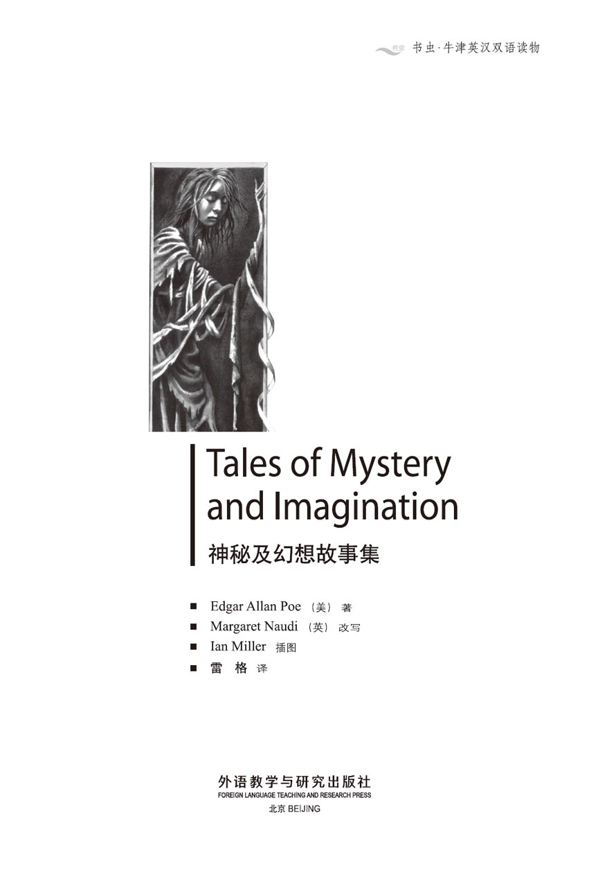
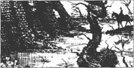
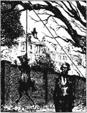
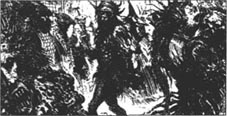
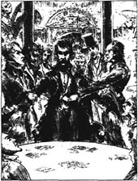
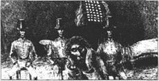

扉页

版权页
京权图字01-97-0335
Originally published by Oxford University Press, Great Clarendon Street, Oxford. © 1993 This edition is licensed for sale in the People's Republic of China only and not for export therefrom.
'Oxford' is a registered trademark of Oxford University Press.
只限中华人民共和国境内销售，不包括香港特别行政区、澳门特别行政区及台湾省。不得出口。
图书在版编目（CIP）数据
神秘及幻想故事集 = Tales of Mystery and Imagination／（美）爱伦·坡（Poe, E. A.）著；（英）诺蒂（Naudi, M.）改写；雷格译．—北京：外语教学与研究出版社，1997.10（2014.12 重印）
（书虫·牛津英汉双语读物）
ISBN 978-7-5600-1299-5
Ⅰ．神… Ⅱ．①爱…②诺…③雷… Ⅲ．小说—对照读物—英、汉 Ⅳ．H319.4：I
中国版本图书馆CIP数据核字（97）第18048号
出版人：蔡剑峰
责任编辑：田 娜
出版发行：外语教学与研究出版社
社 址：北京市西三环北路19号（100089）
网 址：http://www.fltrp.com
版 次：1998年1月第1版
书 号：ISBN 978-7-5600-1299-5
* * *
凡侵权、盗版书籍线索，请联系我社法律事务部
举报电话：（010）88817519
电子邮箱：banquan@fltrp.com
法律顾问：立方律师事务所 刘旭东律师
中咨律师事务所 殷 斌律师
简介
简 介
想象一下，你正置身于湖畔的一座古旧宅邸之中。时间是夜里，外面暴雨肆虐，狂风绕着灰色的石墙嘶吼。房子下面的一间阴森的地窖里放着一口棺材，里面躺着玛德琳小姐的尸体。同你一起待在房间里的是她的哥哥，正在用疯狂的目光望着你。想象一下吧……你这是在鄂榭府上。
翻到另一页，可以见到一只黑猫被人勒住脖子吊在树上。再翻一页，你就会听到一次美妙绝伦的假面舞会上响起的音乐声，看见一千个人在唱歌、跳舞。你现在是在普洛斯佩罗亲王的城堡中。城堡里面灯火通明、生气勃勃，人人纵情狂欢；但是在城墙外面，逡巡着那可怕的戴面具的红死魔……
这些故事将会带你进入一个阴暗的幻想世界，一个充满了恐怖、梦幻与疯狂的世界。
不要一个人读它们！
埃德加·爱伦·坡（1809—1849）出生于美国波士顿。在短暂而郁郁不得志的一生中，他曾供职于几家报社，并发表了很多短篇小说和诗歌。也许最令他声名远播的是他的短篇小说创作。
目录
The Fall of the House of Usher
The Fall of the House of Usher
It was a grey autumn day and the sky was full of large black clouds. All day I had ridden through flat and uninteresting countryside, but at last, as it began to grow dark, I saw the end of my journey.
There, in front of me, stood the House of Usher. And at once — I do not know why — a strange feeling of deep gloom came down on me and covered me like a blanket. I looked up at the old house with its high stone walls and narrow windows. I looked around at the thin dry grass and the old dying trees, and an icy hand seemed to take hold of my heart. I felt cold and sick, and could not think of one happy thought to chase away my gloom.
Why, I wondered, did the House of Usher make me feel so sad? I could find no answer.
There was a lake next to the house and I rode my horse up to the edge and stopped. Perhaps from here the house would not seem so sad, so full of gloom. I looked down into the mirror of dark, still water, and saw again the empty, eye-like windows of the house and the dying trees all around it. The feeling of gloom was stronger than ever.
It was in this house that I was going to spend the next few weeks. Its owner, Roderick Usher, had been a good friend of mine when I was a boy. I had not seen him for many years, but recently he had sent me a letter — a sad and terrible letter. He wrote that he was ill, ill in body and ill in mind; that he wanted and needed to see me. I was his only friend, the only person who could help him in his illness.
Although we had been good friends when we were young, I knew very little about him. He had never spoken much about himself, but I knew that he came from a very old family of which he was the last living man. I also knew that in the Usher family there had never been many children and so for hundreds of years the family name, together with the family home, had passed straight from father to son.
As I stood by the lake, my feeling of gloom grew and grew. I knew also that underneath my gloom lay fear, and fear does strange things to the mind. I began to imagine that the gloom was not in my mind, but was something real. It was like a mysterious cloud, which seemed to come straight from the dark lake and the dying trees and the old walls of the house. A heavy grey cloud, which carried with it disease and fear.
This was a dream, I told myself, and I looked more carefully at the building in front of me. It was, indeed, very old and I noticed that every stone had cracks and holes in it. But there was nothing really wrong with the building. No stones were missing. The only thing that I noticed was a very small crack which started at the top of the building and continued all the way down into the dark waters of the lake.
I went up to the front of the house. A servant took my horse and I stepped into the large hall. Another servant led me silently upstairs. On the walls there were many strange, dark pictures which made me feel nervous. I remembered these pictures from my earlier visits to the house when I was a child. But the feelings that the pictures gave me on this visit were new to me.
On the stairs we met the family doctor. He had a strange look on his face, a look that I did not like. I hurried on, and finally the servant opened a door and took me into the study.
The room was large and long, with high narrow windows, which let in only a little light. Shadows lay in all the corners of the room and around the dark pieces of furniture. There were many books and a few guitars, but there was no life, no happiness in the room. Deep gloom filled the air.
When Usher saw me, he got up and welcomed me warmly. I thought he was just being polite, but as I looked into his face, I could see that he was pleased to see me. We sat down, but he did not speak at first, and for a few moments I watched him in surprise and fear. He had changed so much since our last meeting! He had the same pale thin face, the same eyes, large and clear, and the same thin lips and soft hair. But now his skin was too white, his eyes too large and bright, and he seemed a different man. He frightened me. And his long wild hair looked like a ghostly cloud around his head.
I noticed that my friend was very nervous and that his feelings changed very quickly. Sometimes he talked a lot, then he suddenly became silent and did not say a word for many hours. At other times he found it difficult to think, and his voice was heavy and slow, like the voice of a man who had drunk too much.
He told me why he had wanted to see me, and how he hoped to feel better now that I was with him. He had, he explained, a strange illness which had been in his family for a long time. It was a nervous illness which made him feel everything much more strongly than other people. He could only eat food that was almost tasteless. He had to choose his clothes very carefully because most of them hurt his skin. He could not have flowers in his room because their smell was too strong for him. Light hurt his eyes, and most sounds hurt his ears — except the soft sound of guitars.
Worst of all, he was a prisoner of his own fear. 'I shall die,' he used to say, 'because of this fear, I'm not afraid of danger. What frightens me is fear itself. At the moment I am fighting against fear, but sooner or later I won't be able to fight any more.'
During long conversations with Usher I learnt more about his strange illness. He was sure that it came from the House of Usher itself. He had not left the house for many years and he had become, he thought, as sad as the house itself. The gloom of its grey walls and its dark silent lake had become his own.
He also believed that much of his sadness was because his dear sister was seriously ill. He had one sister, Madeleine, the only other person in his family who was still living, but each day she seemed a little nearer to death.
'Her death,' Usher said blackly, 'will leave me alone in the world, the last of all the Ushers.'
While he was speaking, Madeleine passed slowly through the back of the long room and, without noticing me, disappeared. As I looked at her, my eyes felt heavy with sleep, and I had a strange feeling of fear. I looked across at Usher. He had covered his face with his hands, but I could see that he had become even paler, and that he was crying silently.
Lady Madeleine's illness was a mysterious one which no doctor could understand. Every day she became weaker and thinner, and sometimes went into a sleep which was more like death than sleep. For years she had fought bravely against her illness, but on the night of my arrival she went to bed and did not get up from it again. 'You will probably not see her again alive,' Usher said to me, shaking his head sadly.
During the next few days Usher and I never spoke about his sister. We spent a lot of time painting and reading together, and sometimes he played on his guitar. I tried very hard to help my friend, but I realized that his sadness was too deep. It was a black gloom that covered everything that belonged to his world; sometimes, indeed, he seemed close to the edge of madness.
He painted strange pictures, and sang mysterious songs with wild words. His ideas, too, were strange, and he had one idea that seemed more important to him than all the others. He was quite sure that all things, plants, trees, even stones, were able to feel.
'The House of Usher itself,' he told me, 'is like a living thing. When the walls were first built, life went into the stones themselves and year after year it has grown stronger. Even the air around the walls and above the lake has its own life, and belongs to the house. Don't you see,' he cried, 'how the stones and the air have shaped the lives of the Usher family?'
These ideas were too fantastic for me, and I could not answer him.
One evening I was reading quietly when my friend told me, in very few words, that the Lady Madeleine had died. He had decided, he said, to keep her body for a fortnight in one of the vaults under the house, before it went to its last resting-place. This was because his sister's illness had been a mysterious one, and her doctors wanted to learn more about it. He asked me to help him and I agreed.
Together we carried the body in its coffin down to the vaults under the house. The vault that he had chosen was a long way down, but was under the part of the house where I slept. It had once been a prison, and was small, dark, and airless, with a heavy metal door.
We put the coffin down and then gently lifted up the cover to look at the dead woman for the last time. As I looked down at her face, I realized how much Usher's sister looked like him. My friend then said a few quiet words and I learnt that he and his sister had been born on the same day. Each had known the other's mind without the need for words.
We could not look at her for long. Her strange illness had left her with a soft pink colour on her face, and that unchanging half-smile on her lips which is so terrible in death. We put back the cover of the coffin, fixed it down well, and after locking the heavy door of the vault, went back upstairs into the gloomy house.
After some days of deep unhappiness, I saw that my friend's illness of the mind was growing worse. He did not paint or read any more. He moved slowly from room to room, never knowing what to do. His face became paler, the light disappeared from his eyes, and his voice often shook with fear when he spoke. Sometimes I thought he was trying to tell me some terrible secret. At other times I thought he was going mad. He used to sit for hours, looking at nothing, listening to nothing — except the sounds in his own mind. I myself began to know real fear. I felt my friend's terror, his deep gloom, slowly taking hold of my own mind.
About seven or eight days after we had put Lady Madeleine's coffin in the vault, I went to bed but could not sleep. Hour after hour I lay there, fighting the fear and gloom that filled my mind. Outside, there was a storm which was growing wilder, and my room was full of shadows and the dark shapes of the gloomy furniture. I tried to calm myself, but I only became more frightened.
Suddenly, my body shook with a new terror. I sat up in bed and listened hard. Yes, I could hear some low sounds, coming not from the storm outside, but from somewhere inside the house. Quickly, I put on my clothes and started walking up and down the room, trying to shake off my terrible fear.
Then I heard a knock on my door and Usher came in. His face was as white as it had always been, and there was a kind of madness in his eyes. The look on his face frightened me terribly, but at the same time I was pleased not to be alone any more.
For some moments he looked around without saying a word. Then, suddenly, 'Have you not seen it? No? Then wait. You must see it.' He hurried to the window and opened it.
The wind from the violent storm outside crashed into the room, nearly knocking us to the floor. It was, indeed, a wild, but strangely beautiful night. The wind seemed to be going in circles around the house, and huge, heavy black clouds chased each other, first this way, then that way. We could see no moon and no stars, but a pale ghostly light lay around the house.
'You mustn't, no, you must not watch this,' I cried to Usher. I pushed him gently away from the window and to a seat. 'It's only a storm, and the cold night air will be dangerous to your health. Let's close the window and read together. Look, here's one of your favourite books. I will read to you, and you can listen, and so we will pass this terrible night together.'
The book which I had picked up was The Sad, Mad Life of Sir Launcelot Canning. It was not really one of Usher's favourite books, but it was the only one that I had near me, so I started to read it. It was a wild, fantastic story, but I hoped that my reading would make Usher calmer and less afraid. He listened to me, indeed, but with a kind of mad seriousness that I found frightening.
I read for a while and reached the place in the book where Ethelred broke down the door of the old man's house.
Now Ethelred decided he could wait outside in the storm no longer. He lifted his heavy stick and beat against the wooden door until he had made a hole. Then with his hands he pulled the door to pieces. The noise of the dry wood cracking and breaking could be heard all through the forest.
As I finished reading this sentence, I jumped in my seat and then sat very still. I thought that I had heard, from somewhere far away in the house, the same noise of cracking and breaking wood. But I could not hear it clearly, and the noise of the storm was much louder. I continued reading:
Ethelred entered the house but could not see the old man. Then the house disappeared and he saw a dragon, with fire coming out of its mouth. Ethelred lifted his heavy stick and brought it crashing down on the dragon's head. As the dragon fell dying to the ground, it gave a terrible cry — a long, hard, unnatural scream.
Here again I stopped suddenly. I was sure that I could hear a cry. It was low and far away, but it was a long screaming sound — just like the one described in the book.
Although I was feeling so nervous, I tried hard to hide my terror. I was not sure if Usher had heard the sounds that I had heard. In the last few minutes he had moved and was now sitting with his face towards the door. But I could see that his lips were shaking and his body was moving gently from side to side. I continued reading the story:
And now Ethelred, after he had killed the dragon, turned and saw in front of him a palace of gold with tall gates of shining silver in the walls. Bravely, Ethelred ran towards the palace, but the shining silver gates did not wait for his coming and fell to the ground at his feet with a great and terrible ringing sound.
As I read these words, I heard clearly the loud, heavy sound of metal falling. I jumped to my feet, but Usher sat in his seat and did not move. I ran towards him. He was looking straight in front of him and his face was like stone. As I placed my hand on his arm, his body began to shake. A sickly smile came over his lips, and he spoke in a low hurried voice. He did not seem to realize that I was there. I put my head close to his to catch his words.
'Don't I hear it? — yes, I hear it, and I have heard it. For many minutes, many hours, many days I have heard it — but I was too frightened, too frightened to speak. We have put her alive into her coffin! Did I not tell you that I could hear even the softest sound? I tell you now that I heard her move in the coffin. I heard the sounds many days ago, but my terror was too great — I could not speak! And now tonight — when you read about Ethelred breaking the old man's door, about the cry of the dragon, and the falling of the gates — it was, in fact, the breaking of her coffin, the scream of metal as she broke open the vault, and the ringing crash as the metal door fell to the floor! Oh, where can I escape to? Is she hurrying towards me at this very minute? Is that her angry footstep that I can hear on the stairs? Can I hear the heavy and terrible beating of her heart? MADMAN!'
He jumped up and shouted, screaming out his words like a man dying in terror. 'MADMAN! I TELL YOU THAT AT THIS MINUTE SHE IS STANDING OUTSIDE THIS DOOR!'
As he screamed these words, the heavy door was thrown open by the strong wind. There, outside the door, dressed in the white clothes of the dead, stood the tall figure of the Lady Madeleine of Usher. There was blood on her hands, her arms, her torn white clothes. Every part of her body showed the marks of her long fight to escape from the coffin. For a moment she stood there shaking, moving slowly from side to side. Then with a low cry she fell heavily onto her brother. And in the moment of her now final death, he fell with her to the floor — a dead man, killed by his own terror.
From that room, and from that house, I ran in horror. Outside, the storm was still violent and as I ran past the lake, a sudden wild light shone around me. I turned to see where this strange light was coming from. It was the moon, a full, blood-red moon, shining through a narrow crack in the walls of the house. It was the crack which started at the roof of the building and went right down to the ground. As I watched, the crack grew larger, the wind grew wilder — now I could see the full circle of the blood-red moon, and the great walls of the house breaking and falling. There was a long shouting sound, like the voice of a thousand waters, and the deep dark lake closed over the broken pieces of the House of Usher.
flat adj. uninteresting. 沉闷的；乏味的。
journey n. a trip of some distance. 旅行；旅程。
gloom n. a feeling of deep sadness. 忧愁；阴郁。
chase v. to cause to leave or run away. 驱逐；赶走。
owner n. a person who owns something. 所有人；物主。
underneath prep. under; below. 在下面；从下面；在底下；从底下。
mysterious adj. not easily understood; full of mystery. 难以理解的；神秘的。
disease n. illness or disorder caused by infection or unnatural growth, not by an accident. 疾病；病。
crack n. a line of division caused by splitting; thin mark or opening caused by breaking. 裂缝。
study n. a room used for studying. 书房。
furniture n. 家具。
frighten v. to fill with fear. 使吃惊；惊吓。
ghostly adj. like a ghost, especially having a faint or uncertain colour and shape. 鬼似的；幽灵般的。
tasteless adj. having no taste. 没味道的。
conversation n. informal talk in which people exchange news, feelings, and thoughts. 会话；谈话；交谈。
seriously adv. in a serious way. 严重地；严肃地。
arrival n. the act of arriving. 到达；抵达。
year after year 年复一年。
fantastic adj. odd, strange, or wild in shape, meaning, etc. 奇异怪诞的；不合情理的。
fortnight n. two weeks. 两星期。
vault n. an underground room in which the bodies of the dead are placed, or in which valuable things are stored. 地下室；地窖；墓穴（安放骨灰用）。
coffin n. the box in which a dead person is buried. 棺材。
gently adv. softly. 轻轻地；和缓地。
gloomy adj. having or giving little hope or cheerfulness. 忧郁的；暗淡的。
terror n. great fear. 恐怖；惊慌。
take hold of 控制；把握；抓住。
calm v. to make calm. 使平静下来；使沉着。
up and down backwards and forwards. 来来回回地。
crash v. to move violently and noisily. 猛冲；猛撞。
favourite adj. most liked. 喜爱的；偏爱的。
crack v. to make a sudden explosive sound. 发出爆裂声。
dragon n. an imaginary fire-breathing animal. 龙。
unnatural adj. against ordinary ways of behaving. 不合人情的；变态的；反常的。
sickly adj. unpleasantly weak or pale. 憔悴的；苍白的。
alive adj. having life; not dead; living. 活的；在世的。
escape v. to find a way out; get out. 逃脱；漏掉。
footstep n. a mark or sound of a person's step. 足迹；脚步声。
figure n. the shape of a whole human body, as shown in art or seen in reality. 人像；身影。
violent adj. using, showing, or produced by great damaging force. 猛烈的；激烈的。
鄂榭府崩溃记
鄂榭府崩溃记
这是秋日里灰蒙蒙的一天，空中积满了大团大团的乌云。整整一天，我骑着马从平淡、乏味的乡野间驰过；不过，到天色开始变得昏暝的时候，我终于望见了此行的目的地。
在我眼前，兀然立着鄂榭府。一看见它——不知何故——一种阴悒至极的怪异感觉便降临在我身上，像一张毯子一样罩住了我。我抬头仰望这座有着高大的石墙和狭小的窗户的古旧府第，又环顾四周稀疏的枯草和垂死的老树，这时，仿佛有一只冰冷的手抓住了我的心。我觉得奇寒彻骨，浑身乏力，怎么也想不起一件乐事来驱散心头的阴悒。
我真奇怪，为什么鄂榭府会令我感觉如此之差？我百思不得其解。
紧挨着宅子有一个湖，我骑马来到湖边停住。也许从这个角度看上去，宅子就不显得那样黯淡、那样阴悒了。我低头朝幽暗、凝止的湖水望去，在倒影中再一次看见了房子上面空荡的、眼睛似的窗户，以及四周那些垂死的树。阴悒的感觉愈发强烈起来。

我将在这座府邸里盘桓几个星期。府邸的主人罗德里克·鄂榭，是我孩提时代的一个好友，我已有好多年没有见到他了；可是最近他给我来了一封信——一封透着悲哀与恐怖的信。他在信中说他患了病，身体和精神都不正常，还说他急切地要见我。我是他唯一的朋友，只有我能够帮助他摆脱疾病的折磨。
虽说我们年少的时候是挚友，但我对他了解得非常少。他极少谈及他自己，不过我知道他来自一个历史特别悠久的世家，而他是这个世家最后一位活在人间的男性。我还知道，在鄂榭家族史上还从未有过子息繁盛的时候，于是，数百年来，家族的姓氏连同家族的宅第均是由父及子由子及孙一脉单传。
我站在湖边，心头阴悒的感觉一刻强似一刻。我同样清楚，这阴悒之情的下面暗伏着恐惧，而恐惧又以古怪的方式作用于我的头脑。我开始猜测这阴悒并不在我头脑中，而是某种真实的东西。它宛如一团神秘的云气，似乎是从幽暗的湖水、垂死的树和宅子破旧的墙垣中间径直升腾而起的。那是团沉重的铅云，饱含着疾病与恐怖。
我告诉自己这是个梦，又更加仔细地打量眼前的这栋建筑。的确，它已经非常破旧了，我注意到每一块石头上都有裂隙和孔洞。但是建筑本身又没有真正的残损，它一块石头也不缺。唯一引起我注意的是一道非常细小的裂缝，它从房子的顶部开始出现，然后一路向下延伸，直插入幽暗的湖水之中。
我来到宅子的正面。一个仆人牵走了我的坐骑，我跨进了大厅。另一个仆人默默地领着我上了楼。墙壁上挂着许多幅怪异、晦暗的画，让我十分紧张。我记得当年我还是个孩子，来这座府第里做客时就见过这些画，但是这次来访，它们给我的感觉却是前所未有的。
在楼梯上我们遇见了家庭医生，他脸上现出一副古怪的神情，这神情我很不喜欢。我急忙走了上去；终于，仆人打开门，引我走进了书房。
房间又大又长，窗户又高又窄，只能容许一点点天光射入，屋子的所有角落以及一件件深色的家具四周都是阴影。屋里摆放着好多书籍和几把吉他，但是毫无生气，毫无快乐可言。空气中满是浓重的阴悒氛围。
鄂榭一看见我，便起身热情洋溢地表示欢迎。我起初还以为他这只不过是做出来的殷勤态度，可是待我朝他脸上望去，才知道他见到我是真心欢喜。我们坐了下来，但他一开始并未开口讲话；有几分钟我就这样看着他，心里既吃惊又害怕。从我们上一次见面到现在，他已经发生了多么大的变化呀！他的脸颊还是那样苍白、瘦削，眼睛还是那样大而清澈，嘴唇还是那样薄，头发还是那样柔软。但是现在，他的皮肤变得太惨白，眼睛变得太大太亮；他看上去已经完全是另一个人了。他把我吓坏了。还有他那一头乱糟糟的长发，好似幽灵般的愁云一样缭绕在他脑袋上。
我发现我的朋友极度神经质，情绪变化无常。有时他长篇大论地讲话，而后就会突然间变得沉默寡言，几个小时一语不发。还有的时候他觉得想问题特别困难，于是他说话的声音就变得粗重、迟缓，好像是一个饮酒过量的人发出来的。
他向我讲述了他为何急于见到我，以及他如何希望现在有我相陪伴，他的情况会好转些。他解释道，他得的是一种怪病，这种病已经在他的家族中肆虐好久了。这种神经过敏症搞得他对一切事物都比其他人敏感得多。他只能吃那些几乎完全寡淡无味的食物，只能万分小心地挑选衣物，因为大多数面料都会伤害他的皮肤。他不能忍受屋里摆放花卉，因为花卉的香气对他来说太浓烈了。光线会刺伤他的眼睛，大部分声音会刺伤他的耳朵——只有柔和的吉他弹奏声他还能接受。
最糟糕的是，他成了自己的恐惧的囚徒。“我要死了，”他常常说，“死于这种恐惧。我并不害怕危险。令我丧胆的是恐惧本身。此刻我在同恐惧搏斗，但迟早我会丧失这奋力搏斗的能力。”
在与鄂榭的长谈中，我对他的怪病有了更多的了解。他坚信这个病症来自鄂榭府本身。他已有多年未离开这座宅子了，于是他想，他已经变得跟宅子自身一样悲哀了。它那灰色的石墙与暗黑、凝止的湖水间所蕴藏的阴悒业已化作他个人的愁苦心绪。
他还相信他身染怪病在很大程度上是由于他亲爱的妹妹病得十分严重。他有一个妹妹，名叫玛德琳，是他家族中另一位仅存于阳世间的成员，然而似乎每过一天，她就要朝着死神迈近一小步。
“她这一死，”鄂榭闷闷不乐地说道，“就将把我，鄂榭家族的末代孑遗，独自撇在这世界上了。”
他正说着，玛德琳从这长长的房间的远端缓缓走了过去，她并没有注意到我，便不见了影子。我盯着她，两眼昏昏欲睡，然后心头涌起一阵莫名其妙的惶恐。我再转脸看鄂榭，只见他已用双手掩面，不过我仍能看到他的脸色变得更加苍白，而且他正在无声地哭泣。
玛德琳小姐的病症极为古怪，哪个医生都瞧不出个名堂来。她一天比一天衰弱，一天比一天单薄，有时候一觉睡去，与其说是睡着了，还不如说是死掉了更形象。多年以来她同病魔进行了勇敢的斗争，谁知就在我到来的那天夜里，她上了床，就此卧床不起。“你可能再也不会见到她活着了。”鄂榭悲哀地摇着头，对我说。
此后的数日内鄂榭和我一直绝口不提他的妹妹。我们花了好多时间一起画画，一起读书，有时他还操起吉他弹上一曲。我尽了极大的努力去帮助我的朋友，但是却发现悲哀在他心中已如此根深蒂固。那黑魆魆的阴悒笼罩着属于他的世界的每一样东西；说实在的，有时候他似乎已接近了疯狂的边缘。
他画了一些古怪的画，唱了一些神秘的歌曲，歌词中尽是些狂野的字眼儿。还有，他脑子里的念头也很古怪，其中有一个想法好像比其他想法对他来说更重要。他相当肯定地认为，万事万物，花草，树木，甚至石头，都是有感知能力的。
“鄂榭府本身，”他对我说道，“就好像是一个活物。当墙壁最初被垒起来的时候，生命便进入了这些石头，此后年复一年，逐渐成长壮大。哪怕是围绕着石墙、聚集在湖面上的空气，也有它自己的生命，它是属于这宅子的。你难道没看见吗，”他嚷道，“那石头、那空气是如何塑造了鄂榭家族的众多生灵的？”
这些看法对我来说简直太离奇了，我都不知该怎么回答他才好。
一天傍晚，我正在安安静静地看书，我的朋友非常简短地告诉我，玛德琳小姐已经故去了。他说，他已经决定在宅子下面的一间地窖里停尸两个星期，然后再将其送往最后的长眠之地，理由是他妹妹的病很古怪，医生们还想再研究研究。他请求我帮忙料理一下，我答应了。
我们两个一起抬着盛了尸体的棺材，向下来到房子底部的地窖里。他选定的那间地窖要向下走很长一段才到，但它的正上方恰巧是我的寝室那一带。它从前曾经做过牢房，又小又黑，叫人透不过气来，还装着一扇沉重的铁门。
我们把棺材放下，然后轻轻地掀开棺盖，想最后看一眼死者。我低头朝鄂榭的妹妹脸上望去，这才发现他们兄妹二人是多么相像。然后我的朋友沉着地说了几句话，我终于得知他们二人是同日出生的孪生兄妹，彼此间无须言语交流便能心意相通。
我们对死者不敢久看。她的怪病使得她脸上微微泛出一抹粉红，嘴唇上挂着一丝若有若无、凝定不变的微笑；这笑容出现在死人脸上，可真叫人毛骨悚然。我们将棺盖重新盖上，仔细钉牢，又锁好了地窖那沉甸甸的屋门，才爬上楼梯，回到阴悒的宅子里。
无比沉痛的几天过去，我发现我的朋友精神错乱的病情有所加重。他不再画画，也不再读书，只是在一个又一个房间里徘徊，脚步迟缓，漫无目的。他的脸色更加苍白了，光芒已从他眼中消失，一说起话来，他的声音便常常因恐惧而发抖。有时候我想他是企图向我透露什么可怕的秘密，有时候我以为他要发疯了。他往往一坐就是几个小时，什么也没在看，什么也没在听——听的只是他自己头脑里的声音。我自己开始体会到真正的恐惧了。我感到我的朋友的惶恐，他那致命的阴悒，正在慢慢攫住我的心。
我们把玛德琳小姐的棺材抬到地窖以后，时间过了大约有七八天。这天晚上我上了床，却无法入眠，就一个钟头一个钟头地躺在那儿，同自己满脑子的恐惧和阴悒作着斗争。窗外风雨大作，并且愈发狂放不羁；我的卧室内则满是影子以及阴森森的家具暗黑的轮廓。我尽量使自己平静下来，谁知却越来越心惊肉跳。
突然间，我的身体由于新的一波恐惧袭来而打起了寒战。我从床上坐起，努力地谛听着周围的响动。是的，我能听见某种低沉的声音，不是来自外面的暴风雨，而是从宅子内部的什么地方发出来的。我迅速地穿上衣服，开始在房间里来来回回地踱步，希望以此摆脱掉我那不可救药的恐惧。
接着我听见敲门声，鄂榭走了进来。他的脸上一如既往地泛着惨白，眼里有一种疯狂的神色。他的这副尊容把我吓得要死，但与此同时，我又庆幸不必一个人待着了。
他一语不发，四下里看了一阵子，然后突然说道：“你难道没有看到？没有？那就等着吧。你准会看到的。”他急匆匆地走到窗前，把窗子打开。
一股劲风从外面大逞淫威的雷暴中吹出，轰的一声撞进房间里面，差点儿将我们掀翻在地。说老实话，这可真是一个狂暴而又美丽异常的夜啊。狂风似乎打着旋儿在宅子四周肆虐，一团团硕大的、沉重的乌云相互追逐着，忽而这里，忽而那里。我们看不到月亮也看不到星星，只见一片鬼样的惨白光辉浮动在宅子周围。
“不，你不能，你不能看这个！”我朝鄂榭嚷道，并将他从窗子旁轻轻推开，推到椅子上坐下，“这只不过是一场暴风雨而已。再说，夜里的冷空气对你的身体是有害的。咱们把窗子关上，一道读读书吧，瞧，这书就是你最爱读的一本。我来给你念，你光听着就成；这样我们就可以一道打发掉这恐怖的夜晚了。”
我随手拾起的这本书是兰斯洛特·坎宁爵士的《悲惨、疯狂的一生》。它其实并不是鄂榭最爱读的一本书，然而，它是我在手边唯一能找到的书，于是我便开始念了起来。书里讲的是一个疯狂、离奇的故事，不过我希望我这么一念会让鄂榭平静些，不再害怕。的确，他倒是在听我念书，然而我发现他听的时候带着一股疯狂的一本正经的劲头，吓死人了。
我念了一会儿，就到了书中描述艾特尔瑞德破门而入、硬闯老人住处的那一段。
现在艾特尔瑞德打定主意，他再也不能站在门外、淋着大雨等下去了。他举起重重的大棒子朝木门砸去，最后砸出一个洞。然后他用双手一拽，屋门即成碎片。干木头劈里啪啦碎裂的声音响遍了整个树林。
我念完这个句子后，在座位上跳了一下，然后又稳稳地坐定了。我觉得自己听见了这座府邸远处某个地方传来一阵与那木头劈里啪啦的碎裂声完全相同的声音；但我听得不是太真切，况且暴风雨的声音要大得多。我继续念道：
艾特尔瑞德进了那房子，却不见老人的踪影。然后，房子消失，他看见一条龙，口中喷吐着火舌。艾特尔瑞德举起大棒子朝龙头上砰的一声砸去。龙倒在地上，垂死之际发出一声哀嚎——这声长嚎尖厉刺耳，惨绝人寰。
到这里我再一次嘎然而止。我敢肯定我听见了一声嚎叫。叫声很低，离得很远，但那的确是一声长长的尖叫——就像书中写到的那声哀嚎一样。
虽然我感到极度紧张，但我还是尽力掩饰住自己的惊恐。我拿不准鄂榭是否听到了我听到的那些声音。在过去的几分钟里，他已经有所动作，现在正面对房门坐着。但我仍能看见他的嘴唇在发抖，他的身体左一下右一下地微微摇摆着。我接着念那个故事：
杀掉龙以后，现在艾特尔瑞德转过身来，看见他面前立着一座金子的宫殿，宫墙上嵌着一扇扇光闪闪的银质大门。艾特尔瑞德勇敢地向宫殿跑去，但还没等他跑近，那些闪光的银质大门便倒在他脚边的地上，发出巨大的、可怖的、钟磬齐鸣般的轰响。
我念到这些词句时，清晰地听见金属器物倒地的沉重的巨响。我一跃而起，但鄂榭坐在座位上一动不动。我朝他奔过去。他正直勾勾地瞪视着前方，脸庞好像石头一样。我把一只手放在他胳膊上，这时他的身体开始发抖，一丝惨淡的笑容出现在他的嘴唇上。然后他开口了，声音又低又急，似乎没有意识到我的存在。我低头凑近他的脑袋，去捕捉那些词句。
“我没听见？——不，我听见了，我早就听见了。我听见好几分钟，好几个钟头，好几天了——但是我太害怕了，害怕得不敢说出来。我们把她活着装进了棺材！我难道没有告诉过你，哪怕最轻微的声音我也听得见？现在我告诉你，我听见她在棺材里动弹的声音，那是好几天以前的事，可是我太害怕了——我不敢说！到了今天晚上——当你念到艾特尔瑞德打破老人的家门，念到龙一声哀嚎，念到大门纷纷倒地的时候——实际上，那是她打破了棺材，是她打开地窖时铁门发出的尖叫声，是那铁门倒在地上发出的钟鸣般轰的一响！噢，我能逃到哪儿去？这一刻她是不是正在急匆匆地赶来找我？我听见在楼梯上响起的是不是她那愤怒的脚步声？我能否听见她那沉重的、可怕的心跳声？疯子！”
他跳起身叫嚷着，像一个在恐惧中奄奄一息的人那样尖声喊出来：“疯子！我告诉你，这一刻她就站在这扇门外！”
正当他尖叫着这几句话的时候，沉重的屋门被一阵强风吹开了。在门外，立着鄂榭府的玛德琳小姐的高大身躯，她身穿雪白的尸衣，满手、满胳膊以及撕破的白色尸衣上都是血污。她浑身上下处处都显露出她为了逃出棺材而长时间苦苦挣扎的痕迹。她在那里站了片刻，颤抖着，身体慢慢地左摇右晃，然后低嚎一声，重重地摔倒在她哥哥身上。就在她终于一命呜呼的一刹那，他同她一起摔倒在地——一个死人，一个死于自己的恐惧的人。
我惊恐万状，马上逃出那间屋子，逃出那座宅邸。外面，风暴依旧猛烈；我跑过湖水，一道怪异的光芒突然照射到我身上。我回过头，看那古怪的光是从哪儿来的。是月亮，一轮血红的满月，正透过宅子墙壁上一道狭窄的裂缝闪耀着光辉。那道裂缝便是自建筑顶部开始、向下一直延伸到地面的那一道。待我望去，那道裂缝变得更宽，风也刮得更大了——现在我可以看到整个血红的满月。宅邸高大的石墙正在碎裂、倒塌；一阵长长的呼号声传来，宛如千股洪流齐泻；然后，那幽深、晦暗的湖水便吞没了鄂榭府的一切残砖碎瓦。
The Black Cat
The Black Cat
I know you will not believe this story. Only a madman could hope that you would believe it — and I am not mad. But as I am going to die tomorrow, I would like to tell my story to the world today. Perhaps some day, somebody more calm and less excitable than me, will be able to explain it.
I have always loved animals. I loved them deeply, from the very first days of my life. When I was young, we always had many animals in our house, and so I used to spend most of my days playing with them and taking care of them. As the years passed, I grew into a quiet, gentle man, and my love for animals grew too. I found that they were more friendly, more honest than most men. Animals were always my best friends.
I got married when I was quite young. Luckily, my wife loved animals too, and she used to buy me many animals as presents. In fact, our house was always full of animals — we had birds, fish, a dog, chickens, and a cat.
This cat, whom we called Pluto, was a large black cat. He was a beautiful animal, and he was also very clever. I loved Pluto more than I loved all my other animals. I wanted to do everything for him myself, so I never let my wife take care of him. I used to play with him and give him his food, and he followed me everywhere I went.
For several years Pluto and I were the best of friends, but during this time my life slowly changed. I became a heavy drinker, and my need for alcohol soon grew into a terrible disease. I was often angry and violent. I began to shout at my wife, and I even started to hit her. My animals, too, felt the change in me. I stopped taking care of them and sometimes I was even cruel to them. But I was never cruel to Pluto. As time passed, my disease grew worse, and soon even Pluto was not safe from my violence.
One night I arrived home late. I was very, very drunk. When Pluto saw me, he tried to run away from me, and this made me angry. I caught him by his neck and shook him. He, in his fright, bit me on the hand. At once, a wild, terrible anger filled me, and I could feel nothing except burning hate. Slowly I took a knife from my pocket, opened it, and then carefully cut out one of Pluto's eyes from its socket. I shake today as I write these words down. Every time I remember that day, I still feel sadness and pain.
When I woke up the next morning, I felt ashamed of what I had done. But this feeling was not strong enough to make me change my life. I continued to drink because it was too difficult for me to stop. Soon, I had forgotten what I had done.
As the months passed, Pluto got better. His empty eye socket still looked terrible, but at least he wasn't in pain any more. Not surprisingly, he used to run away from me when he saw me, frightened that I would hurt him again. At first I was sad to see him run away — an animal which had once so loved me. Then I began to feel a little angry. There is something strange about the human heart. We humans seem to like hurting ourselves. Haven't we all, a hundred times, done something stupid or evil just because we know that we should not do it? It was because of this, this need to hurt myself, that I did this next evil thing...
One morning I woke, found a rope and calmly tied it round Pluto's neck. Then I hung the poor animal from a tree and left it there to die. I cried as I did this terrible thing. My face was wet with tears and my heart was black and heavy. But I killed it. I killed it because I knew it had loved me, because it hadn't hurt me, even because I knew that I was doing something terrible and wrong.
That same night we had a fire in our house. I was woken from my sleep by loud shouts of 'Fire!' When I opened my eyes, I found that the fire had already reached the bedroom. My wife and I ran out of the house as fast as we could. Luckily we escaped death, but the house and almost everything in it was destroyed.
The next day I went back into the house and saw several people standing in a group, looking at a wall. It was the only wall of the house that was still standing after the fire. It was one of my bedroom walls, the one where the head of my bed had rested. As I came nearer to the wall I heard someone say, 'How strange!' and another person, 'That's impossible!' And then I saw it — a huge cat. Not a real cat, but the shape of a cat outlined in the white bedroom wall. It was as clear as a picture. I could even see a rope around the animal's neck.
I stood there in horror, too frightened to move. Then, slowly, I thought back to the night before. I had left the cat hanging from a tree, in the garden at the back of my house. When a neighbour had first noticed the fire, many people had run into the garden. One of them had probably cut the cat from the tree and thrown it through my open window, in order to wake me up. The cat's body had hit my bedroom wall and left its shape there, because the plaster on that wall was new and still soft.
Although I thought that this was a very reasonable explanation, the strange shape on the wall still worried me. I thought about the cat day and night. I began to feel sorry that I had killed it. I started walking around the streets at night looking at all the cats, to see if I could find another one like Pluto.
One night, I was drinking in my favourite bar when I suddenly noticed a large, black cat. I went up to it and touched it. It was very large — as large as Pluto had been. It also looked very like Pluto. Except for one thing. Pluto had been black all over, but this cat had a white mark on its front.
I touched the cat and he immediately lay down against my leg and seemed very friendly towards me. This, I decided, was the cat that I wanted. I offered the barman some money to buy the cat from him, but he said that the cat didn't belong to him. In fact, he had no idea where it had come from.
So I took the cat home. My wife liked it immediately, and it stayed with us from that day. But soon — I do not know why — the cat started to make me angry, and, as time passed, I began to hate it. I did not hurt it in any way, but I always tried to keep as far away from it as possible.
I knew one reason why I hated this cat so much. On the morning after I had brought it home, I saw that, like Pluto, it had lost one of its eyes. My wife, who was the kind, gentle person that I had once been, only loved the cat more because of this. But the cat didn't like my wife. It loved me alone.
Every time I sat down, it used to jump onto my knees. When I went out of a room, it used to run out in front of me and get between my feet, or climb up my legs. At these times, I wanted to kill it. But I didn't, because I was too afraid — afraid of the cat, and even more afraid of the white mark on its chest.
I have already mentioned this mark. At first, there was nothing strange about it. It was just a white mark. But slowly this mark grew and changed until it had the clear shape of a terrible, a horrible thing — I find it difficult, here in my prison, to write the word. It was the shape of the GALLOWS! Yes, those horrible wooden posts from which they hang men by a rope around the neck!
As each day passed, my fear grew and grew. I, a man, a strong man, had become afraid of a cat! Why was I so frightened, so worried by a stupid animal? Day and night, I could get no rest. I had the most terrible dreams, and my mind turned to dark, evil thoughts. I hated everything, everybody — and life itself.
One day my wife and I needed to get something from the cellar underneath the house. The cat followed us down the steps and threw itself in front of me. I almost fell on my face and, mad with anger, I took hold of an axe and tried to kill the animal. But my wife caught my arm to stop me, and then anger exploded in my mind. I turned and drove the axe deep into her head. She fell dead on the floor, without a sound.
After this horrible murder, I calmly made plans to hide the body. I knew I couldn't take it out of the house, either by day or night, because the neighbours would see me. So I had to think of other ways... I could cut the body up into very small pieces and then burn them in a fire. I could hide the body under the floor. Or I could put the body in a box and then ask someone to carry the box away... Finally, I thought of a better idea. I decided to hide the body behind the walls of the cellar.
I knew immediately which wall to choose. There was a wall in the cellar round the bottom of an old chimney, which was no longer used. This wall had bricks in the front and back but was empty in the middle. I started work at once. I took out some of the bricks from the front wall and carefully put the body against the back wall. Then I put back the bricks and covered them with plaster. I made sure that the plaster did not look new, and soon the wall looked just the same as all the other walls. When I had finished my work, I looked at the plaster. 'I've never done a better piece of work!' I said to myself happily.
I then looked around for the cat, to kill it. It had brought too much unhappiness into my life, and so it, too, must now die. I looked for it everywhere, but it had disappeared. I was free at last! That night I had a deep, peaceful sleep — I, who had just killed my wife, slept well!
Three days passed and still the cat did not appear. I was now a happy man, happier than I had been for a long time. I wasn't worried by what I had done. People had asked a few questions and the police had visited my house, but they had found nothing.
On the fourth day the police visited again and began to search the house. They looked into all the rooms and then went down into the cellar. I went with them, feeling calm and safe. I watched them as they looked everywhere. They seemed quite happy that there was nothing there and they got ready to leave. I was very happy. I was sure that I was safe, but I wanted to say something, just a word or two, to show how unworried I was.
'Gentlemen,' I said, 'I'm pleased that you've found nothing here, and that you are now leaving this house... But let me show you something, gentlemen. Do you see how well built this house is? These walls, you will notice, are very strong.' As I said these words, I knocked on the wall with a stick — the wall where I had hidden my wife!
At that moment we heard a sound. It was a strange sound, unlike anything I had ever heard before. The sound was soft at first, almost like a baby crying. Then it grew louder and louder and turned into one long, endless scream. It was like a cry rising from Hell.
The policemen looked at me, then at one another. They ran to the wall and started pulling out the bricks as fast as they could. In minutes the wall was down and there, for all to see, was the body of my dead wife. On top of her head, with a red, open mouth and one burning eye, sat the black cat — the animal which had made me a murderer, and which would now send me to my death.
I had put the horrible thing into the wall, alive, with my wife!
excitable adj. easily excited. 容易激动的。
take care of to be responsible of. 负责。
alcohol n. liquid in drinks like beer and whisky that can make people drunk. 酒精；乙醇。
cruel adj. liking to cause pain or suffering; taking pleasure in the pain of another; merciless. 残忍的；残酷的；无情的。
drunk adj. under the influence of alcohol. 醉的；喝醉的。
socket n. a hollow part of a structure into which something fits. 凹槽；眼窝。
surprisingly adv. causing surprise. 令人吃惊地；异常地。
evil adj. very bad; wicked; harmful. 邪恶的；极坏的。
hang v. to fix at the top so that the lower part is free. 悬挂；吊。
destroy v. to ruin; put an end to the existence of (something). 破坏；毁坏。
outline v. to make an outline of. 画出……轮廓。
plaster n. a pastelike mixture of lime, water, sand, etc., which hardens when dry and is used, especially on walls, to give a smooth surface. 灰泥。
mark n. a spot, line, or cut that spoils the natural colour or appearance of something. 斑点；痕迹。
immediately adv. at once. 立即；马上。
offer v. to hold out (to a person) for acceptance or refusal. 提供；提出。
mention v. to tell about in a few words, spoken or written. 提及；说起。
gallows n. the wooden frame on which murderers used to be killed by hanging from a rope. 绞刑架；绞台。
cellar n. an underground room, usually used for storing goods. 地窖；地下室。
explode v. to blow up or burst. 爆炸。
murder n. the unlawful premeditated killing of a human being by another. （蓄意）谋杀；凶杀。
brick n. baked clay used for building. 砖。
peaceful adj. quiet; untroubled. 安静的；平静的；安宁的。
search v. to look through, or examine (a place or person) thoroughly or carefully to try to find something. 搜查；探索；寻找。
unworried adj. not anxious. 不着急的；不忧虑的。
endless adj. never finishing. 无穷尽的；无休止的。
hell n. a place where the souls of the wicked are said to be punished after death. 地狱；阴间。
murderer n. a person who kills a human being unlawfully. 谋杀者；凶手。
黑猫
黑猫
我知道你们是不会相信这个故事的。只有疯子才会指望让你们相信——而我并没有发疯。可是考虑到明天我就要死了，我还是想在今天把我的故事讲给这个世界。也许有一天，有一个比我更镇静、更不易激动的人，将能够解释这一切。
我这人一向喜爱动物，从我生命最初的岁月起，便深深地眷恋它们。我小的时候，我们家里总是养着一大堆动物，于是我常常把大部分时间都花在陪它们玩、照料它们上面。随着光阴流逝，我成长为一个安静、文雅的男人，同时，我对动物的喜爱也有增无减。我发现它们比大多数人更友好，更诚实。动物们一直是我最好的朋友。
我在相当年轻的时候就结了婚。幸运的是，我妻子也喜爱动物，她常常买回好些个宠物送给我作礼物。事实上，我们家里总是充满了动物——我们养了鸟、鱼、一只狗、几只鸡，还有一只猫。
这只猫被我们称作普路托，它是只大个儿的黑猫，长得非常漂亮，而且十分聪明。比起我的其他宠物来，我对普路托更是宠爱有加。我情愿亲自为它做一切事情，所以从不让我妻子照料它。我经常陪它玩，喂它食吃；我走到哪儿，它也跟到哪儿。
普路托和我就这样做了好几年最亲密的朋友，可是在此期间，我的生活慢慢地发生了一些变化。我成了一个严重酗酒的家伙，我的嗜酒如命很快发展成可怕的顽症。我经常发脾气，态度很粗暴。我开始对我妻子大喊大叫，甚至开始动手打她。我的动物们也感觉到了我的变化。我不再精心照料它们，有时候甚至虐待它们。但我从不对普路托施暴。天长日久，我的病情逐渐加重了，很快地，就连普路托也难以幸免于我的暴虐凶残了。
一天夜里，我很晚才回到家中，我已经喝得酩酊大醉了。普路托一看见我，就想寻路逃开，这可让我心头火起。我一把抓住它的脖子，摇晃它。它吓坏了，就在我手上咬了一口。顿时，一股疯狂、骇人的怒火充盈了我的胸膛，除了燃烧着的仇恨我什么也感觉不到了。我慢慢地从口袋里掏出一把刀子，打开它，然后很仔细地把普路托的一只眼睛从眼眶里剜了出来。今天，当我写下这些词句时，我不禁浑身瑟瑟发抖。我每一次记起那一天，都依然感到悲伤和痛苦。
第二天早晨醒来时，我为我前夜的所作所为感到羞耻。但这种感情还不够强烈，不足以让我改过自新。我继续滥饮，因为想让我停下来真是太困难了。不久，我就将我所做的事情忘了个精光。
几个月过去了，普路托的伤势有所好转。它那空荡荡的眼窝看上去仍旧很可怕，但它起码不再觉得疼了。不出所料，它一见到我便赶紧跑开，惟恐我会再次伤害它。开始的时候，我看见它跑开还觉得很难过——这只动物从前是多么喜欢我呀。然后，我开始觉得有一点生气了。人类的心肠可真有点古怪，我们好像很喜欢伤害自己。难道我们不都曾明知故犯，昧着良心无数次干下这样那样的蠢事或者恶事吗？正是由于这个，由于这种自我伤害的需求，我紧接着又做下了这桩丧尽天良的事……
一天早晨，我醒来后找到了一根绳子，平静地把它套在了普路托的脖子上。然后我将那可怜的畜生吊在一棵树上，任凭它那样死去。我一边做这件可怕的事情一边哭泣，眼泪打湿了我的脸颊，我的心又阴郁又沉痛。但是我吊死了它。我吊死它是因为我知道它曾经爱过我，是因为它不曾伤害过我，甚至是因为我知道我在做着一件可怕的错事。

当天夜里我们家的房子失火了。我从睡梦中惊醒，听见有人高喊：“着火了！”我睁开眼，发现大火早已烧到了卧室，便和我妻子一起飞也似的逃出了房子。我们侥幸死里逃生，可是房子以及房子里的几乎全部家当都烧了个精光。
第二天，我回到房子里去，见几个人聚成一堆，正盯着一堵墙看。这是大火过后整栋房子唯一一堵仍旧立着的墙壁，是我卧室的四壁中的一面，平时我的床头就靠在上面。我向那面墙走近些，听见有人说：“真不可思议！”又听见另一个人说：“那是不可能的！”然后我也看见了——一只大猫。不是真猫，而是一只猫的形状，印在卧室雪白的墙上，像幅画一样清晰。我甚至可以看到那畜生脖子上拴着的绳子。
我魂飞魄散地站在那儿，吓得一动不敢动。然后，慢慢地，我回想起前一天夜里发生的事。我把猫吊在树上，是在我家后面的园子里。有一个邻居首先发现起火，很多人便跑进了那个园子。很可能是他们中间的某个人割断绳子，从树上解下那只猫，并将它顺着敞开的窗户扔进来，希望以此叫醒我。猫的尸体撞到我卧室的墙上，在上面印下了自己的轮廓，因为那面墙上的灰泥是新抹的，还软和着呢。
尽管我觉得这个解释很是入情入理，但墙上那古怪的形状仍然令我心烦意乱。日日夜夜，我总想起那只猫。我有些后悔自己害死了它，并开始在深夜跑到街上转悠，注意观察所有的猫，看是否能找到一只与普路托相像的。
一天夜里，我正在我最喜欢的酒吧里喝酒，突然，我注意到一只大个儿的黑猫，便朝它走过去，抚摸它。它大极了——和普路托过去一样大，而且看上去也很像普路托。不相像的只有一处。普路托是通体乌黑的，但这只猫前胸有一块白斑。
我抚摸着那猫，它立即挨着我的腿躺倒，似乎对我非常友善的样子。我当即断定，这就是我梦寐以求的那只猫。我向酒吧老板提出付他一些钱买下这只猫，但他说这只猫并不属于他，实际上，他根本不知道它是从什么地方跑来的。
于是我把猫带回了家。我妻子一下子就喜欢上了它，打那天起，它便和我们待在一起。可是没多久——我不知是何缘故——这只猫开始惹我生气了，而且，时间一长，我便开始对它深恶痛绝。我并没怎么折磨它，不过我总是尽量避开它，巴不得离得越远越好。
我知道有一个原因可以解释我为何如此厌恶这只猫。就在我把它带回家的第二天早上，我看到，像普路托一样，它也丢掉了一只眼睛。我的妻子像过去的我一样，是个善良、温柔的人，她因为猫的这次不幸反而更加怜爱它了。但这只猫并不喜欢我妻子，它只依恋我一个人。
每次我一坐下，它就要跳到我膝盖上；我一走出房间，它就窜出来跑到我前面，走在我两脚中间，或是爬到我的腿上。每逢这种时刻，我就想杀了它。但我没有下手，因为我太害怕了——害怕这只猫，尤其害怕它胸前的那块白斑。
这个斑块我在前面提到过。一开始，它并没有什么奇怪之处，不过是块白斑而已。但是慢慢地，这个斑块在长大、变形，最终清晰地显露出一样可怕的、恐怖的东西的形状——在这牢房之中，我很难写下那个字眼。那是个绞刑架的形状！是的，正是他们用绞索套住脖子将人吊死在上面的那种恐怖的木头架子！
随着每一个日子过去，我的恐惧感一增再增。我，一个男人，一个强健的男子汉，竟然到了害怕一只猫的地步！我为什么要这样心惊胆寒，这样被一只愚蠢的畜生搞得六神无主？白天黑夜，我都不得安宁。我总做些最可怕的噩梦，脑子里尽是些阴暗、邪恶的念头。我憎恨一切事，憎恨所有人——也憎恨生活本身。
有一天，我和我妻子需要到房子下面的地窖里去取点东西，那只猫也跟着我们下了台阶，并且一个箭步蹿到了我前头，害得我差点儿摔了个嘴啃泥。我气得发疯，抄起一柄斧头就想劈死这畜生，可是，我妻子拽住我的胳膊，要阻止我。这时，怒火在我心中爆发，我转过身，将斧头深深劈进了她的脑袋。她一声没哼，登时倒在地上断了气。
干完了这桩恐怖的杀人勾当，我镇定自若地谋划起匿尸灭迹的事来。我知道，无论白天还是黑夜，我都不能把尸首运出这房子，因为那样做会让邻居瞧见。所以我只好想些别的法子……我可以把尸体切成极小的碎块，扔到火里烧掉；我可以把尸体藏在地板下面；我还可以把尸体装到箱子里，再请人将箱子搬走……最后，我想出了一个更好的主意。我决定将尸体藏在地窖墙壁的背后。
我马上就知道应该选择哪一面墙了。地窖里有一面墙是围着一个废弃不用的旧烟囱底座砌起来的，它的正面和背面都垒着砖头，但中间部分却是空的。我马上动手开干。我从正面墙上拆下一些砖块，小心翼翼地将尸体贴着后面的墙放好，然后把砖块砌回去，再用灰泥将砖墙抹平。我把灰泥抹得使它看上去不像是新的，过不多久这面墙就和其他几面看着一模一样了。我忙活完，望着墙上的灰泥，高兴地自言自语道：“我还从没干过这么漂亮的活计呢！”
然后我四下里找那只猫，要杀了它。它给我的生活带来了太多的不幸，所以，现在它也必须去见阎王爷。我找遍了每一个角落，但是它已无影无踪了。我终于自由了！当天夜里，我太太平平地酣睡了一场——我，一个刚刚杀害了自己爱妻的家伙，居然睡了个好觉！
三天过去了，那只猫仍然没有出现。我现在快乐极了，是很久以来最快乐的时候。我对自己犯下的罪行并不担心。人们来问了几个问题，警察也到我家来过了，但他们什么也没有发现。
第四天，警察又来了，并且开始进行搜查。他们查看了每一个房间，然后下台阶来到地窖里面。我陪着他们，心里感到非常平静和安全，一直冷眼旁观他们检查每一个角落。他们没有找到任何东西，似乎相当高兴，并且准备离开了。我满心欢喜。我确信自己是安全的，但又想说点什么，哪怕是一两句话，就为了表示一下我是多么满不在乎、清白无辜。
“先生们，”我开口道，“你们在这里没有找到任何东西，现在又要离开这幢房子了，我很高兴……不过我要给你们看样东西，先生们。你们看见没有，这房子建得有多么好？你们会注意到，这几堵墙结实极了。”我一面说着这话，一面用根棍子敲打着墙壁——正是我藏匿妻子尸体的那面墙！
就在那一刻，我们听见了一个声音。这声音很古怪，同我以前听到过的声音都大不一样。它开始时很轻，几乎像是一个婴儿的哭声；然后就升得越来越高，转而成为一声没完没了的嚎叫，仿佛从地狱中响起的哀号。
警察们一齐望着我，又彼此看了看。他们奔到墙边，开始拼命将砖块飞快地向外扒。几分钟不到，砖墙扒倒了；那里赫然便是我那亡妻的尸首。在她的头顶上蹲着那只黑猫，张开血盆大口，一只独眼里燃烧着鬼火——这畜生诱使我犯下了杀人罪，现在又要送我去见阎王了。
我把这可怕的东西，同我妻子一起，活活砌到墙里去了！
The Masque of the Red Death
The Masque of the Red Death
The Red Death had been in the country for many, many years. No disease had ever been so deadly. People called it the Red Death because it left blood, red horrible blood, on the body and face of each person it visited. And no one, if visited, was ever left alive. Once a person was touched by the Red Death, he immediately felt pains, and soon afterwards started to bleed from every part of his body. In thirty minutes he was dead. After that no one, not even his family, went near the blood-covered body.
Everybody was afraid of the Red Death — everybody except the fearless Prince Prospero. He refused to be troubled by it. Although half the people of his country had already died from this terrible disease, he continued to enjoy life to the full. One day he decided to invite a thousand of his strong and brave friends to stay with him in one of his castles, far out in the countryside. There the Red Death would not be able to touch them.
It was a huge and extraordinary castle, built to Prince Prospero's own plan. It had strong high walls and great gates of heavy metal. Now when the Prince and his friends arrived at the castle gates they went inside, locked the gates carefully and threw away the keys. In that way no one would be able to enter or escape. They were all there together, far away from the Red Death. Now they could forget the world outside and think only of themselves. They had everything they needed to amuse themselves, because the Prince had forgotten nothing. He had brought in food and wine, actors, musicians, and dancers. All of this, and life itself, was inside the castle. Outside lay the Red Death.
Towards the end of the fifth or sixth month, while the Red Death was at its most deadly outside, the Prince gave a wonderful masked ball for his friends. It was a wild and wonderful ball, but first let me tell you about the rooms in which he gave the ball. There were seven rooms in all. In most castles, of course, the rooms for great parties or dances join each other end to end. In this way, when the doors at the end of each room are opened, the seven rooms become one huge room, and you can see from the first room right through to the last one. In Prospero's castle, it was different. Each room turned suddenly round a corner into the next, so if you were standing in one room it was impossible to see into the other rooms.
In the middle of each wall, on the right and left, there was a tall, narrow window opening onto the closed passage which ran along beside all seven rooms. Each window was made of different coloured glass, and the colour of the glass was the same as the colour of the room that it opened onto. The first room, for example, was blue, and so its windows were also a deep blue. The second room was purple, and so the windows, too, were purple. The third was green, with green windows, the fourth orange, the fifth white, and the sixth violet. The seventh room was black. Its walls were black, its thick, heavy carpet was also black. But its windows were red — a deep blood-red.
There were no candles in any of the rooms. The only light came from fires, in hanging metal baskets, which were in the passages outside the rooms. Each fire was opposite a window, and so the light from the fire shone through the coloured glass and filled each room with strange and fantastic shadows. But in the black room the firelight that shone through the blood-red window changed the room into something too horrible to describe. In that strange light, faces became wild and frightening, and few people were brave enough to enter the room at all.
In this room, against the farthest wall, stood a huge black clock. Every hour it chimed loud and deep and clear, filling the castle with its long, gloomy sound. And while the clock chimed, the musicians stopped playing and even the wildest dancers stood still, in silence and fear, listening to the passing of another hour... But when the chiming stopped, people looked at each other and laughed, trying hard to pretend that they had not been frightened. Happiness came into the castle again, until the clock chimed the passing of the next hour, and the same fear returned.
Prince Prospero's ball, although given in these strange rooms, was wild and happy. The Prince had planned everything — the colours, the paintings on the walls, even the cloaks and masks worn by each one of his friends. He had chosen all the clothes with the greatest of care, putting together the beautiful and the ugly, the strange and the fantastic, the surprising and the frightening.
Each man and woman was dressed like a terrible dream. And in and out of the rooms these dreams walked and danced, their clothes changing colour each time they entered a different room. But no one was brave enough now to enter the black room. As the night passed and the fires burned brighter, the colours and shapes in this room became more horrible than ever. The black carpet and walls seemed full of gloom, and the deep chimes of the black clock sounded even more frightening.
But the other six rooms were full of life and pleasure. People were dancing and singing, talking and laughing, and the wild noise of a thousand happy men and women rang through the castle. Then came the hour of midnight, and once again dancers and musicians became still and silent, as the clock slowly rang the twelve long chimes of midnight. And because the twelve chimes took a long time to ring, each person had more time to think, and feel uncomfortable. They also had time, before the last chime had sounded, to notice a masked figure who had not been there before. The first person who saw the stranger told the next person, who told another, and in a few minutes a cry of fear and horror rose up from the crowd.
Now you will remember that everyone at the ball was wearing strange cloaks and masks, which belonged more to the world of dreams and wild imagination than to everyday life. So why, you may ask, this horror, and this fear? But even in the cruellest heart there are some fears too terrible to laugh at. The tall thin figure of the stranger was dressed from head to foot in the white clothes of the dead. And the mask over the face was frighteningly real — it was the face of a dead man. Worse still, the face and the body were covered with red, horrible blood! Here, in the middle of all that dancing and happiness was a living picture of the Red Death!
When Prince Prospero saw the masked stranger, his face became white with fear. Then his fear turned to anger and he shouted out, 'Who is that? Who is mad enough to play games with us, and with death, in this way? Take hold of him, and pull off his mask. I want to see the face of the man who, tomorrow, will hang from the castle roof.'
The Prince was in the blue room as he said these words. They rang loudly and clearly through the seven rooms. Many of the Prince's friends started to run towards the masked figure, but they were all too frightened to touch him. With slow and silent steps, the stranger walked slowly towards the Prince, passing very near to him. Then he continued walking, and went from the blue room into the purple one, from the purple into the green, and then into the orange room, the white room and then the violet room. No one tried to stop him.
Then Prince Prospero, mad with anger, hurried through the six rooms, with a sword in his hand. As the masked figure entered the black room, the Prince was close behind him, holding his sword up high. At that moment the stranger turned suddenly to look at the Prince. There was a loud cry — and the sword fell upon the black carpet, followed by the dead body of the fearless Prince Prospero.
At once a crowd of people ran into the black room and took hold of the masked stranger. He was standing very still, in the shadow of the black clock. Angrily, they pulled away the clothes and the mask, but then they backed away in horror, because inside the clothes and mask they found — nothing.
And now each person in the castle understood that the Red Death was there, among them. It had come like a thief in the night. And one by one they fell down dead. And the black clock stopped ringing with the death of the last person. And the fires also died away. And the only things left in the castle were Darkness and the Red Death.
masque n. 假面舞会；化装舞会。
afterwards adv. later; after that. 后来；以后。
trouble v. to make anxious, nervous, worried, etc. 使烦恼；使忧虑。
extraordinary adj. more than what is ordinary. 非常的；非凡的。
amuse v. to cause to spend time in a pleasant manner. 娱乐；消遣。
musician n. a person who performs on a musical instrument, or who writes music. 音乐家；乐师；作曲家。
ball n. a large formal occasion for social dancing. 舞会。
party n. a gathering of people, usually by invitation, for food and amusement. （应邀参加宴请和娱乐的）聚会。
passage n. a narrow connecting way, especially inside a building. 过道；走廊。
opposite adj. facing. 对面的；相对的。
describe v. to say what something is like; give a picture (of) in words. 叙述；描写；描述；形容。
chime v. to make musical bell-like sounds; show (the time) in this way. 奏出钟声似的乐音；报时。
pretend v. to give an appearance of (something that is not true), with the intention of deceiving. 假装；伪装。
surprising adj. causing surprise. 令人吃惊的；出乎意料的。
frightening adj. causing fear. 可怕的；令人吃惊的。
midnight n. 12 o'clock at night. 午夜；夜里12点。
uncomfortable adj. not comfortable. 不舒服的；不安的；不自在的。
cloak n. a loose outer garment, usually without arm-coverings, which is sometimes worn instead of a coat. 斗篷；大氅。
imagination n. the act of imagining or the ability to imagine. 想象；想象力。
clearly adv. in a clear manner. 清楚地。
anger n. a fierce feeling of displeasure, usually leading to a desire to hurt or stop the person or thing causing it. 怒火；愤怒。
fearless adj. without fear. 不怕的；无畏的。
one by one one after another; singly. 一个一个地。
darkness n. 黑暗。
红死魔假面舞会
红死魔假面舞会
红死病已在国内肆虐很多、很多个年头了，还不曾有过哪种疾病是如此致命的。人们称之为红死病，是因为它每降临到一个人头上，那人的面部和身体就会出血，就会流出恐怖的、殷红的鲜血；还有，罹病之人无一得以幸存人世。一旦某个人遭到了红死魔的触摸，他就会立即感到疼痛，此后不久身体各处开始出血，三十分钟之内准会丧命。然后，所有人，哪怕是他的家人，都不敢靠近那鲜血淋漓的尸体。
人人惧怕红死病——只有无畏的普洛斯佩罗亲王是个例外。他拒绝为此所困扰。尽管在他的国家里已有半数民众被这可怕的疾病夺去了生命，他仍然继续充分地享受生活。一天，他决定邀请1,000位健壮、勇敢的朋友同他一道去他远在乡间的一座城堡居住。在那里，红死魔对他们将无计可施。
这座城堡规模宏大，非同凡响，是按照普洛斯佩罗亲王亲自设计的蓝图建造的，它有着巍然高耸的坚固城墙以及厚重的金属大门。现在，亲王和他的朋友们来到城堡的大门前；他们进入城堡，仔细地锁好大门，然后将钥匙扔掉。这样一来，就没有一个人能够进入或是逃走了；他们都在一起，远远地避开红死魔，现在他们可以忘掉外面的世界，仅仅关注他们自己。供自己取乐用的东西他们样样都有，因为亲王什么都没忘了带。他带来了食物、美酒、演员、乐师和舞者。所有这一切，再加上生命本身，均处于城堡内部；城堡外面则是红死病的天下。
到了第五或第六个月的末尾，外面正是红死病最为猖獗的时候，亲王却举办了一个盛大的假面舞会招待他的朋友们。舞会开得热烈奔放、精彩绝伦，不过首先让我来向诸位介绍一下举办舞会的场地。总共有七间屋子。当然，在大多数城堡里，举行大型宴会或舞会的房间都是彼此衔接、首尾相连的。按照这种布局，每一间屋子两端的门一开，七间屋子就会变成一个大房间，你可以从第一间屋子径直望见最后一间。然而在普洛斯佩罗的城堡里，情形就有所不同了，每一个房间要绕过一个拐角才突然转而成为下一个房间。这样，如果你站在其中一个房间里，你是不可能望见其他几个房间的。
在每间屋子左右两面墙的中部，各开着一扇又高又窄的窗户，窗外是一个封闭的走廊，它在全部七个房间旁边经过。每扇窗户都镶着不同颜色的玻璃，而玻璃的颜色又同窗户所处的房间的色调相一致。比如，第一个房间是蓝色的，所以它的两扇窗户都是深蓝色的；第二个房间是紫色的，它的窗户也就是紫色的；第三个房间是绿色的，安着绿窗户；第四个为橙黄色；第五个为白色；第六个为紫罗兰色。第七个房间是黑色的，四壁涂成黑色，又厚又重的地毯也是黑色的；然而这间屋子的窗户却是红色的——一种深浓的血红。
哪间屋子里都是不点蜡烛的。唯有的光亮来自屋子外面走廊里挂着的金属吊篮中燃着的火焰。每一团火焰正对着一扇窗户，于是火光透过彩色玻璃映射进来，使每一间屋子都布满古怪、奇异的影子。可是，那间黑色屋子在透过血红色窗户投射进来的火光的映照下却变得难以形容地恐怖瘆人。在那怪异的光芒中，一张张面孔显得又疯狂又可怖；根本就没有几个人胆大得敢走进那间屋子。
在这间屋子里，靠着最远处那面墙立着一座黑色的大钟，每到整点便以洪亮、深沉、清晰的声音报时，让那悠长、阴森的轰鸣响彻整个城堡。每当大钟报时，乐师们便停止演奏音乐，就连最狂热的舞者也要呆呆地站定，一声不吭、满心恐惧地谛听着又一个钟头的流逝……但是一旦报时结束，人们便彼此相视大笑，尽力装出一副根本没有受到惊吓的样子。欢乐再一次降临到城堡之中，直到大钟宣布下一个钟头逝去的时候，相同的恐惧才会回到他们心里。
普洛斯佩罗亲王的舞会尽管是在这样几间稀奇古怪的屋子中举行的，却开得甚为无法无天、恣情纵欲。亲王筹划了一切——房间的色彩，墙上挂的图画，甚至供每一位朋友穿戴的斗篷和面具都准备好了。他尽最大努力精心挑选了所有的衣装，集美与丑、荒诞不经与异想天开、别出心裁与怵目惊心于一体襄此盛举。
男男女女们装扮得好似一个个噩梦，这些噩梦在一间间屋子中进进出出，走动着，跳着舞，每走进一间色调不同的屋子，身上的衣服就变换一次颜色。但现在没有一个人敢走进那间黑色的屋子。夜一点点过去，火焰燃烧得更亮了，映得这间屋子里的色彩与怪影比以往更为恐怖。黑黢黢的地毯和四壁看上去极为阴森，那黑色大钟深沉的报时声听起来更加令人毛骨悚然。
不过另外六间屋子里面却是生机盎然，一片笑语欢声。人们唱啊跳啊，说啊笑啊，一千名快乐的男男女女纵情狂欢的嘈杂声在城堡中回荡着。然后午夜的时刻到来了，跳舞者与乐师们再一次变得安安静静、一语不发，听着大钟缓缓地发出午夜的十二声悠长的轰鸣。由于这十二下报时的钟声用了很久才打完，每一个人便有了更多的时间陷入沉思，感到不安。他们同样有时间在最后一下报时钟声鸣响之前注意到有一个先前并不在场的戴面具的家伙。第一个看到这陌生人的人告诉了第二个人，第二个又告诉了第三个，就这样，几分钟不到，人群中响起了一阵惊恐万状的叫声。
现在诸位会记起，参加舞会的每一个人都是穿戴着千奇百怪的斗篷和面具的，而这些装束在日常生活中并不常见，它们更多地属于一个梦幻与狂想的世界。那么，你可能会问，为何如此惊慌、如此害怕呢？话虽这么说，但即便是在最残忍无情的人心里，也埋藏着可怕得难以一笑置之的恐惧。那个身量又高又瘦的陌生人从头到脚穿着死人穿的白色寿袍，脸上戴的面具令人生畏地逼真——那是一张死人的脸。更糟糕的是，他的脸上和身体上布满了猩红、骇人的鲜血！在歌舞升平和欢声笑语中竟然出了个红死魔的活生生的化身！

普洛斯佩罗亲王一看见那戴面具的不速之客，便吓得脸色惨白。接着，他的惊恐又变成了愤怒，他嚷道：“那是什么人？什么人竟然如此丧心病狂，拿死亡跟我们开这种玩笑？把他抓起来，撕掉他的面具。我要看看这家伙的脸，明天再把他吊死在城堡的顶上。”
亲王说这番话的时候正站在蓝色的房间里，声音洪亮而清晰地响彻七个房间。亲王的好多朋友抬腿向那戴面具的人奔去，但他们都怕得厉害，不敢动他。那陌生人迈着不慌不忙的、无声的步子朝亲王缓缓走去，紧挨着走过他身旁之后，又继续踱着步子从蓝色房间进了紫色房间，从紫色房间进了绿色房间，然后依次进了橙黄色房间、白色房间和紫罗兰色房间。没有人敢于阻止他。
这时，普洛斯佩罗亲王气得发疯，急忙手执一柄宝剑穿过六个房间赶来。当那戴面具的人走进黑色房间时，亲王赶到他身后，将宝剑高高举起。就在这一刻，那陌生人突然转过身来，紧盯着亲王。只听得一声惨叫——那柄宝剑掉落在黑色的地毯上，紧接着倒下来的是无畏的普洛斯佩罗亲王的尸体。
一群人立即冲进黑色房间，抓住了那个戴面具的不速之客。他正一动不动地站在黑色大钟的阴影里。人们愤怒地扯掉了袍子和面具，但是他们接着又恐惧地退了回去，因为他们在袍子和面具下面没有找到任何东西。
至此，城堡里的每一个人都明白了，红死魔已经到来，就在他们中间；他像个盗贼一样于深夜溜了进来。于是，人们一个接一个地倒地身亡，当最后一个人死掉时，那座黑色大钟也停止了鸣响。火焰也逐渐熄灭。城堡中只余下黑暗和红死魔，此外别无一物。
William Wilson
William Wilson
William Wilson is not my name. But I shall use it in this story because my real name is too well known, too hated in every corner of the world. My evil crimes have made sure of that. And as the day of my death comes nearer, I feel the need to write, to explain to you how my life of crime began.
Most men become evil slowly. They start with little crimes and then move on to bigger ones. But I am different. I moved into real crime with just one big step. Has any man lived a life as evil as mine? But now, the shadow of death fills me with fear; day and night I have the most terrible dreams. Perhaps someone, somewhere, will feel sorry for me. Listen to my story...
I was a wild and excitable child. My parents worried about me and often tried to punish me, but they never succeeded in changing me. I refused to obey them and I never followed any orders that they gave me. I wanted to be free so I listened only to myself.
The first school that I can remember was a large and very old house in a small, quiet English village. As I write, I can still feel the coolness of the shadowy gardens near the house. I can smell the sweetness of the flowers and hear the deep sound of the church bells as they rang every hour.
These feelings give me some moments of happiness as I sit here in black misery, waiting for death. In fact, it is here, in this school, that my story really begins...
The school building was large and old. The big gardens were closed in by a high wall, with broken glass at the top, just like a prison. We only went out three times a week. On Saturday afternoons we took a walk in some fields near the school, under the watchful eye of one of our teachers. On Sundays we went out twice, morning and evening, to go to the village church.
I was not bored or unhappy during my life at school. Children can amuse themselves very easily, and in my imagination, I lived an exciting life, full of mystery and interest. But in the real world, the days were always the same — we woke up and went to bed, we walked in the fields and played in the playground... The playground was, indeed, a very special place. It was a place where friends were made and lost, a place always full of trouble and excitement.
I was the kind of boy who liked to give orders, not to take them. I always wanted to win every game, every fight, and to be first in everything. All the other boys, even those a bit older than myself, were happy to follow and obey me. All, that is, except one. His name was the same as mine, so I shall call him William Wilson, too. We were not from the same family, but we both had the same name. This was not surprising because my name was not an unusual one.
This William Wilson refused to obey me. He argued with me, both in class and in the playground, and tried to stop the other boys from following me. Actually, I think I was the only boy who realized what he was doing. He did everything very cleverly and silently, and in this way nobody really noticed it. But I — I noticed what he did, and I was frightened by it. I was afraid that Wilson was stronger than I was. I became worried and angry when I saw the other boys follow him instead of me. But Wilson was always cool and calm. Nothing ever troubled him. He seemed to want one thing only — to see me frightened and unhappy. But at the same time I sometimes noticed that he showed a friendliness towards me — which was most unwelcome to me.
It is difficult for me to describe my feelings towards Wilson. I didn't hate him, but neither did I like him. I think that, more than anything, I felt afraid of him. At the same time I wanted to know more about him. I wanted to find something that frightened or worried him. But I could find nothing. There was nothing strange in the way he looked or walked. Nothing, that is, except for one thing — his voice. His voice was strange. When he spoke, he could never speak loudly. In fact, he never spoke above a whisper.
Wilson was quick to find the one thing that I really did not like. It was my name. Although I come from an old and famous family, my name is a very everyday one. It could belong to any unimportant workman. I had always hated my name, but now I hated it even more because both of us had the same name. I heard it twice as often. And there was something that worried me even more deeply. We seemed to look alike as well. We were as tall as one another, we were both thin, and even our faces were alike. Because our names were the same, I knew that the older boys thought that we were brothers, but nobody seemed to notice that we looked alike. But Wilson noticed it and he also saw that I was angry about it. Nothing ever escaped him. He always knew my deepest feelings.
After a while he started to dress like me, and even to walk like me. Luckily, he could not speak like me when I spoke loudly, but when I spoke in a whisper, his whisper was just like mine.
All these things troubled me deeply. I could see that Wilson enjoyed making me angry, and he used to laugh at me secretly. Strangely, the other boys never noticed how he made fun of me, and copied me in every way. I was the only one who noticed it.
Very often he used to give me advice, telling me quietly what I should do or what I should say. I hated him even more when he did this. Today, of course, I realize that his advice was always very good and sensible. What a pity that I never followed it!
As time went by, I became more and more angry with him. Why should he, or anyone, give me advice? My feelings towards him changed and I actually began to hate him. He noticed this and tried not to come near me so much.
One day, towards the end of my fifth year at school we had a violent argument. While we were arguing, he showed his feelings more openly than usual, and a very strange idea came into my mind. I thought — how can I describe it? — I thought just for a second or two that I had known him before, a long, long time ago, when we were very young children. It was, as I say, a strange and very stupid idea, and I forgot it as quickly as I could.
But that night, when every one was asleep, I got out of bed. Then I walked through the dark building, with a small lantern in my hands, until I reached Wilson's room. I left the lantern outside and went near to his bed. Yes, he was asleep. I returned to get my lantern and went back to his bed. I had planned to do something cruel to him while he slept. But as I looked at the sleeping boy, my heart beat faster and I was filled with fear. Was this really what William Wilson looked like? Did he look just the same when he was awake? I knew that he was as tall as I was. I knew, too, that he walked like me and talked like me, and copied me in every way that he could. But was it possible that the person in that bed looked so like me in every way? I began to shake with fear, and my body turned ice-cold. Surely he couldn't look like this! Was I really looking at a boy who was not just a copy of me, but...
I was more frightened than I had ever been in my life. I went silently out of his room, left the school building and never returned there again.
After several lazy months at home, I was sent to Eton, one of the most famous English boys' schools. There, I soon forgot William Wilson and the strange fears I had felt. If I thought about them at all, I used to laugh at myself.
My life at Eton lasted for three wild and evil years. I learnt to be clever and secret, and was interested only in new ways of amusing myself. I chose the worst kind of students for my friends, and spent all my time in evil enjoyment. One night, when I was in my third year, I invited some students to a party in my rooms. We drank and played cards all through the night. As well as the wine, we had other, perhaps more dangerous, pleasures. As the first morning light started to appear, I suggested a new evil amusement. Then I noticed that somebody was opening my door and I heard a servant's voice, 'There's somebody outside who wants to speak to you, sir. He seems to be in a hurry.'
I walked, with difficulty, to the hall, as I was feeling very drunk with the wine. It was still too dark to see clearly, but I could just see the shape of a young man. He was as tall as I was, and was wearing the same clothes as myself. I could not see his face.
He came up to me and whispered the words 'William Wilson!' in my ear. I knew the voice at once. It was impossible to mistake it. Those two words were enough to fill me with fear. Before I could look into his face, he had disappeared.
The meeting only lasted a few seconds, but for some weeks I could not forget it. I thought of it all the time. Who and what was this William Wilson? Where did he come from? What did he want from me? My questions stayed unanswered, but I did discover one thing. I learnt that William Wilson had left my last school on the same day that I myself had run away from it.
Soon I forgot about him again, and not long afterwards I went up to Oxford University. My parents were not sensible people and they always gave me a lot of money. I was able to live a fashionable, expensive life, and to choose as my friends the sons of the richest families of England. There was nothing at all to stop me now. I spent my money wildly, and passed my days and nights in dangerous and exciting pleasures.
At Oxford I spent a lot of my time gambling. I became, in fact, a most clever and successful gambler — no better than a thief. I played cards in order to win money from the other students and become even richer. Of course, I was careful to play only with students who were bad at playing cards. In this way I could be sure of winning every time. My friends were not clever enough to see what I was doing.
In my second year at University I met a new student called Glendinning. He came from an old English family and was one of the richest students in the university. I soon realized that he was very unintelligent and because of this he was, of course, a very suitable person for me to gamble with! I started to play cards with him often, and for some time I made sure that he always won.
At last I decided that the time was right and I made my plans carefully. I met Glendinning at the rooms of a friend of mine, a Mr Preston (who had no idea of my secret plan). Eight or ten other friends were also invited. In this way Glendinning had no idea that I planned to gamble with him that evening. In fact, at the party, it was he who first suggested playing cards.
We played for many long hours. In the end, by my careful plan, I was playing alone against Glendinning, while the others watched our game. Glendinning had drunk a lot of wine during the evening and his hands were beginning to shake a little — from fear or from the wine, I wasn't sure. He had already lost a large amount of money. Then he did what I had hoped for. He took another long drink of wine and said, 'Let's double the stakes.' Beginners always think they can win back what they have lost in this way.
At first I pretended to refuse. Then he became angry, so, naturally, I had to agree. My plan was working excellently. We continued playing, and in less than an hour my winnings were four times as big. Glendinning's face was now as white as a sheet. Everyone around the table started talking, and to my surprise I heard the words, 'That's the end of Glendinning. He's just lost everything he had!'
I had heard that Glendinning was very rich indeed — rich enough to lose a lot of money and not to worry about it. Now, I understood from the whispers around the table, that this was not true. I had, in fact, won everything he owned, and so destroyed him.
Nobody spoke. Glendinning had covered his face with his hands and everyone clearly felt very sorry for him. Even I began to feel a little worried, and wondered what I should do.
As we stood in silence, the doors suddenly opened and a strong wind filled the room. It blew out all the candles in the room and we were left in darkness. But in the few seconds before the candles went out, we noticed that a man had entered the room. He was about as tall as I was, and his face and body were hidden by a long cloak. As we stood in the darkness, we could feel him standing in the room.
Then he began to speak. He spoke in a whisper, and his voice filled me with fear. 'Gentlemen,' he said. 'I am here because I have something important to tell you. I am afraid that you do not really know the man who has just won so much money from Glendinning. Let me tell you how to learn more about him. Please look very carefully inside his left sleeve and at the several little packets inside the large pockets of his jacket.' Immediately after these words he left the room, as silently as he had entered it.
That moment was one of the worst moments of my life. I had no time to do anything. My friends fell on me angrily, lit the candles again, and searched my clothes. They found the single cards hidden carefully inside my left sleeve, and in my pockets they discovered the packets of special cards which helped me to win every game I played.
My friends stood around me in a circle and looked at me in silence. Mr Preston then picked up a cloak from the floor. 'Mr Wilson,' he said. 'Here is your cloak. You will, I hope, leave my room, and then leave Oxford immediately.'
I wanted to hit him, but something stopped me. It was the cloak that Preston was holding in his hands. Although it looked like my cloak, I knew that it wasn't, because my own cloak was already over my left arm. It was a very unusual and expensive cloak, which a shop had made specially for me. How was it possible that there was now another cloak just like it?
I thought back to the moment when the stranger had come into the room. Yes, he had been wearing a cloak too... Full of fear, I quickly took the cloak from Mr Preston and left the room. The next morning I left Oxford and escaped to Europe. I was now known to be a cheat at cards and every door in England would be closed against me.
But bad luck travelled with me. In fact I soon realized that my troubles at Oxford had been only the beginning... Soon after I arrived in Paris, I met William Wilson again. There, too, he destroyed my evil hopes. Everywhere I went, year after year, he appeared like a ghost and came between me and my plans. In Rome he stopped me from getting what I wanted. In Vienna, too — in Berlin, and even in Moscow! Wasn't there anywhere where I could be left alone? I went from city to city, trying to escape from him. But I couldn't feel free. I couldn't be alone. He followed me everywhere.
Again and again I used to ask myself these questions. 'Who is he? Where does he come from? What does he want from me?' But I could find no answer. I thought deeply about all the times when I had seen him. In every city, I realized, Wilson had done the same thing. He had not stopped my plans all the time, but only when they were evil and dangerous, either to others or to myself. I understood all this, but still I was very angry. Why couldn't Wilson leave me alone? Why couldn't he let me live in the way I wanted to?
I realized another thing too. Every time Wilson appeared, he had never let me see his face. I had always noticed his clothes. It was difficult not to notice them because they were always the same as mine. But he kept his face hidden from me. Why did he do this? Did he really think that I was so stupid? Did he think I hadn't realized who he was? The man who followed me everywhere and destroyed my plans again and again was the same William Wilson of my schooldays! But let me continue with my story.
Until now I had felt afraid of Wilson and had obeyed him. The mystery of his sudden arrivals, his cleverness, his deep understanding of me — all these things filled me with fear. I always obeyed him, although I hated myself for doing it. But recently I had become a very heavy drinker. Wine made me feel brave and strong, able to fight anybody who tried to stop me. At the same time I began to think that Wilson was becoming weaker. Was this really happening or was it just a dream? I cannot tell, but I do know that my own feelings were becoming more and more violent. I began to feel a burning hope — soon I would break free from this terrible enemy and never take his orders again.
One evening, in 18—, I was in Rome and was invited to a big party in the palace of Duke Di Broglio. The Duke was old and boring, but his wife was young and beautiful, and not very sensible. I had evil plans for her. She and I had agreed to meet, during the party, in a quiet room where we could be alone.
As I walked from room to room looking for her in the crowds, I suddenly felt a hand touch my arm. Then I heard a whisper in my ears. Angrily I turned round and saw a man. He was wearing the same clothes as I was, but his face was covered with a black mask. I caught him by his arm. 'Stop!' I shouted. 'I have had enough trouble from you! This is the last time you'll follow me anywhere! Come with me now into the next room. If you don't, I shall kill you right now, here where you stand!'
I took him into a small room nearby and pushed him violently to the floor. He got to his feet shakily, and stood up against the wall. I then closed the door and ordered him to fight. For a second he did not move. Then he silently took out his sword.
It was a short fight. I was wild and excited and felt stronger than I had ever felt before. After only a few seconds I pushed him against the wall and plunged my sword into his body again and again.
At that moment somebody tried to open the door. I ran to check that the door was locked and then ran back towards my enemy. How can I describe what I saw at that moment? During those few seconds when I had turned to the door, the room had become strangely different. There was now a large mirror at the end of the room. I was sure that it had not been there before. As I stepped up to the mirror, I saw myself, walking forward shakily, my face white and covered with blood.
Or so I thought. But I was wrong. It was my enemy, Wilson, who stood before me in his last moments of life. His mask and cloak lay on the floor. His face was now uncovered. And I saw, in terror, that his face was my own!
Then Wilson spoke, but no longer in a whisper, and I thought I heard my own voice speaking as he said:
'You have won, and I have lost. But from this moment you, too, are dead — dead to the world, to Heaven, and to hope! You lived in me — and, in my death, look in my face, which is your own, and see how you have murdered yourself.'
crime n. unlawful activity in general. 违法活动；犯罪行为。
punish v. to cause (someone) to suffer for (a fault or crime). 惩罚；处罚。
obey v. to do (what one is asked or ordered to do) by (someone). 服从；顺从；遵守。
misery n. great unhappiness or great pain and suffering (of body or of mind). （指身心上的）痛苦；苦难；悲惨的遭遇。
watchful adj. careful to notice things. 小心的；警惕的；戒备的。
mystery n. a strange secret nature or quality. 神秘；秘密；奥秘。
playground n. a piece of ground kept for children to play on, especially at a school. 游戏场；运动场；操场。
actually adv. really. 实际上；真实地。
unwelcome adj. not acceptable and wanted. 不受欢迎的。
whisper n. whispered words. 低语；耳语；私语。
workman n. a man who works with his hands, especially in a particular skill or trade. 工人；劳动者；工匠；技工。
luckily adv. having, resulting from, or bringing good luck. 幸运地；侥幸地。
strangely adv. hard to accept or understand; surprisingly. 奇怪地；奇异地；令人费解地。
copy v. to follow (someone on something) as a standard or pattern. 模仿；仿效。
sensible adj. reasonable and practical; having or showing good sense. 明智的；有见识的。
pity n. a sad or inconvenient state of affairs. 可惜的事；遗憾的事。
lantern n. a container, usually of glass and metal, that encloses the flame of a light. 提灯；灯笼。
awake adj. not asleep; having woken. 醒着的；醒来的。
shake v. to move quickly up and down and to and fro. 摇晃；发抖；震动。
enjoyment n. happiness from things and experiences. 享受；欣赏。
pleasure n. a cause of happiness, enjoyment, or satisfaction. 乐事；乐趣。
mistake v. to have a wrong idea about; understand wrongly. 弄错；误解。
fashionable adj. (made, dressed, etc.) according to the latest fashion. 时髦的；流行的。
expensive adj. costing a lot of money. 昂贵的；花钱的。
gamble v. to risk one's money on horse races, in (card) games, business, etc. 赌博；打赌。
unintelligent adj. not having or showing powers of reasoning or understanding. 理解力差的；无知的；愚蠢的。
suitable adj. fit (for a purpose), right; convenient. 合适的。
amount n. a quantity or sum. 数量；数额。
stake n. something that may be gained or lost. 赌注。
winnings n. money which has been won in a game, by betting on a race, etc. （赢得的）钱；奖金。
sleeve n. a part of a garment for covering an arm. 衣袖。
packet n. a small package; a number of small things tied or put together into a small box, case, or bag. 小包；小盒。
discover v. to find (something existing but not known before). 发现。
unusual adj. not usual; rare; not common; interesting because different from others. 罕见的；稀有的；异常的；与众不同的。
cheat n. a person who cheats; dishonest person. 骗子；不诚实的人。
schooldays n. 学生时代。
fight v. to use violence (against others). 打仗；打架。
Duke n. a nobleman of the highest rank outside the Royal Family. 公爵。
crowd n. a large number of people gathered together. 人群；一群人。
shakily adv. unsteadily. 摇摇晃晃地。
plunge v. to push or rush suddenly or violently. 冲；刺。
lock v. to fasten with a lock. 锁住；锁上。
heaven n. the place where God or the gods are supposed to live; place of complete happiness where the souls of good people go after death. 天堂；天国。
威廉·威尔逊
威廉·威尔逊
威廉·威尔逊并不是我的名字，但我将在这个故事中使用它，因为我的真名实姓早已在世界上每一个角落广为人知、深受憎恶了。之所以如此，是因为我曾犯下了罪行。由于我的死期正一天天临近，我觉得有必要诉诸笔墨，向诸位解释一下我的犯罪生涯是如何开始的。
人们走向堕落大都是一步步的，开始时犯些小过错，接下来罪行便愈犯愈大。但我的情形完全不同。我只是迈了一大步便堕入了真正的罪恶深渊。曾经有人像我一样经历过如此邪恶的一生吗？可是现在，死亡的阴影使我的内心充满了恐惧，我没日没夜地做最可怕的噩梦。也许在某个地方有某个人会为我感到难过。请听我的故事……
我小时候是个野性十足、容易激动的孩子，我父母很为我操心，总想惩罚我，但他们从未成功地令我有所改变。我拒不服从他们，从不照着他们给我的指令去做。我一心想自由自在地生活，于是干什么都是我行我素。
我记得我上的第一所学校是位于英格兰一座僻静的小村庄中的一栋非常古旧的大房子。我现在一边写，一边还能感觉到房子旁边那幽暗的花园里的丝丝凉意，还能嗅到花朵的芬芳，听到每当整点时便敲响的深沉的教堂钟声。
当我无比凄惨地在这里坐以待毙的时候，这些感觉给了我片刻的欢悦。事实上，我的故事就是从这里、从这所学校真正开始的……
学校的校舍规模宏大，年代久远。大大的花园被一道高墙紧紧围住，墙头还插着碎玻璃片，活像一座监狱。我们一个星期只能出去三次。到了星期六下午，我们要在一位老师的密切监视下去学校附近的田野里散一圈步。星期天我们能出去两次，早一次晚一次，都是去村里的教堂。
我的读书生涯并未令我感到厌烦和不快，孩子们总是能够很轻易地找到自我娱乐的法子。在我的想象中，我过着一种激动人心的生活，生活中充满了神秘和有趣的事情；但是在真实的世界中，一个个日子总是千篇一律——我们醒来，睡去，去田野里散步，在操场上玩耍……说实在的，操场可真是一个非常特别的地方。这是个交到朋友、失去朋友的地方，是个总是充满了麻烦和骚动的地方。
我是那种喜欢对别人发号施令、而不喜欢听人家指挥的男孩，总是想赢得每一场游戏、每一场争斗，想在任何一件事上当老大。所有其他男孩，甚至那些比我稍微大一点的，都乐于追随我，服从我。所有人都如此，只有一个人除外。他的名字和我的一模一样，所以我将同样把他也称为威廉·威尔逊。我们俩并不是来自同一个家庭，但都叫同一个名字。这没什么可奇怪的，因为我的名字又不是那么不常见。
这个威廉·威尔逊拒绝服从我。他跟我争执不下，从课堂里吵到操场上，还试图阻止其他男孩追随我。实际上，我想我是唯一一个意识到他在这样做的男孩。他将每一件事都做得非常巧妙、不动声色，这样，就不会有人真正注意到了。然而我——我注意到了他的所作所为，并且因此害怕起来。我真怕威尔逊比我更强大。每当我看见其他男孩撇下我去追随他，我就变得心急如焚，怒不可遏。但威尔逊总是那样冷静、镇定。什么都不曾让他为难。他似乎只需要一件事——看我受惊吓和闷闷不乐。但与此同时，我注意到，他有时向我作出了友好的表示——这可是最让我不能接受的。
我很难形容我对威尔逊的感情。我不恨他，但也不喜欢他。我想，最主要的感情是，我害怕他；同时我又想对他有更多的了解，以便从中找出一些令他提心吊胆和焦躁不安的东西。但我一无所获。他的模样或走路的样子都没有什么古怪之处，但是称得上特别的有一样——就是他的声音。他的声音很古怪。他开口的时候，从来不能高声讲话。事实上，他的说话声比耳语也强不了多少。
威尔逊机敏地发现有一件东西是我真正不喜欢的，那就是我的名字。尽管我出身于声名显赫的古老世家，但我的名字却非常平庸，它适合任何一个微不足道的劳动者。我一向憎恶我这名字，但现在对它的深恶痛绝又加深了一层，因为我们两个用的都是这同一个名字，我现在听到它的次数成了先前的两倍。还有一件事情更是令我深为烦恼。我们两个看上去非常相像，个头一般高，都很瘦，甚至面容都很相像。我知道因为我们两个的名字一样，大一些的男孩子们都以为我们是兄弟，但好像还没有人注意到我们长相相似。然而，威尔逊注意到了这一点，还看出我对此非常生气。什么也逃不过他的眼睛。他总能洞悉我心底隐藏得最深的情感。
过了一阵子，他开始在穿着打扮，甚至走路的步态上模仿我。还好，我高声讲话的时候他模仿不了我，但是，一旦我悄声低语，他的悄声低语就同我的毫无二致。
所有这一切都深深困扰着我。我看得出威尔逊为惹我生气而乐不可支，而且常常在背地里笑话我。奇怪的是，其他男孩竟然从未觉察到他是如何拿我开玩笑，如何千方百计地模仿我。注意到这一点的只有我一个人。
他非常频繁地向我提出忠告，轻声指点我应当怎样做事，怎样讲话。他这么做的时候我就更加厌恶他。当然了，时至今日，我认识到这些忠告往往是大有益处、入情入理的。多么可惜啊，我竟然从未照着去做过！
时光流逝，我对他的怒气也与日俱增。凭什么要让他，或者随便什么人，来向我提出告诫？我对他的感情改变了，实际上我已开始憎恨他。他注意到这一点，便尽量不与我过分接近。
我入学校读书将近五个年头的时候，有一天，在我们之间爆发了一场激烈的争吵。在吵架过程中，他比往常更为公开地表达了自己的思想感情，这时，一个非常奇怪的念头出现在我的脑海之中。我想——叫我怎么说呢？——也就那么一两秒钟吧，我想，我是早就认识他的，在很久很久以前、当我们还都是小孩子的时候就认识他了。正如我所说，这是个非常愚蠢的古怪想法，于是我尽可能快地把它忘掉了。
但是当天晚上，每个人都入睡之后，我下了床，然后手持一盏小提灯，穿过黑洞洞的大楼，找到威尔逊的房间。我把提灯留在门外，自己走到他的床边。是的，他已经睡着了。我转身拿起提灯，再走回到他床边。我已经盘算好了在他熟睡时狠狠地整他一下子。但是，我一看见那个熟睡的男孩，心跳便加快了，而且充满了恐惧。威廉·威尔逊真的就是这个样子吗？他醒着时看上去也是这同一副模样吗？我知道他和我一般高。我还知道他像我一样走路，像我一样说话，尽其所能千方百计地模仿我。但是要说床上睡着的那人怎么看都与我酷似，这怎么可能呢？我开始因恐惧而瑟瑟发抖，浑身上下变得冰冷冰冷的。他绝对不可能是这个样子！难道我真的是在眼睁睁看着一个男孩，他并不是我的一个什么复制品，而是……
我害怕极了，这辈子都没这么害怕过。我悄没声息地溜出他的房间，离开了学校大楼，从此再没回去过。
在家里游手好闲地待了几个月后，我被送进了伊顿公学，英国最负盛名的男校之一。到了那里不久，我便将威廉·威尔逊和我曾感受到的恐惧忘掉了。假如我真要想起它们来，我便总是嘲笑我自己。
我在伊顿公学过了三年狂放不羁、频频作恶的生活。我学会了行事机敏、隐秘，仅仅对种种寻欢作乐的新办法感兴趣。我选择那种最差劲的学生做朋友，把时间全部花在腐化堕落的享乐上面。在我念第三个学年的一天晚上，我邀请一些学生到我的房间里来聚会，我们通宵喝酒、打牌。除了葡萄酒，我们还另有一些也许更危险的乐趣。当第一道晨光现出时，我建议大家干一件新的坏事作为消遣。这时，我发现有人在开我的房门，又听见一个仆人的声音：“外面有个人要同您讲话，先生。他好像急匆匆的。”
因为饮酒过量，我已经醉得不成样子，费了很大力气才走到客厅里。天气仍然很暗，什么也看不大清楚，我只能辨出一个年轻人的轮廓来。他和我一般高矮，穿的衣服也同我的一模一样。我看不清他的面孔。
他向我走来，对着我的耳朵低语道：“威廉·威尔逊！”我立即听出了这个声音。那是不可能弄错的。单是这两个词就足以让我满心惊惧。还没等我仔细看看他的脸，他已消失得无影无踪了。
这次会面仅仅持续了几秒钟，但此后的几个星期都让我无法忘记。我时时刻刻想着这事。这个威廉·威尔逊是谁，是什么？他从哪里来？他想从我这儿得到什么？我的这些问题一直得不到解答，不过有一件事我搞清楚了。我得知，就在我逃离上一次就读的那所学校的同一天，威廉·威尔逊也离开了学校。
很快，我再一次忘掉了他；此后不久，我又进了牛津大学。我父母很不明智，他们给了我大量的钱，于是我得以过着入时、奢侈的生活，与英国最富有的家族的子弟交朋友。现在没有任何东西来阻止我了。我大肆挥霍钱财，日日夜夜都在冒险的、激动人心的享乐中度过。
在牛津，我将大量时间花在赌博上面。事实上，我已成为一个最为狡猾、成功的赌棍——比一个贼也强不到哪儿去。我跟其他学生玩纸牌，就是为了从他们那里赢钱，让自己变得更为富有。当然了，我很小心，总是找那些牌技不佳的学生玩，这样一来，就能确保每一次都大获全胜。我的朋友们不够聪明，看不出我搞的把戏。
上大学二年级的时候，我结识了一个名叫格兰丁尼的新生，他出身于一个古老的英格兰世家，是学校里最有钱的学生之一。我很快发现，此人智力极端低下，正因为如此，他理所当然是我的一个非常合适的赌博对象！我开始经常性地同他一起玩纸牌，而且一段时间里总是让他赢。
终于，我认为时机成熟了，便仔细地制定了计划。我在一位朋友家里碰见了格兰丁尼，这位朋友是普雷斯顿先生（他对我的秘密计划一无所知）。还有八个或十个朋友也应邀来做客，这样一来，格兰丁尼就不会想到那天晚上我是早有预谋地要同他赌博了。其实，在那天的聚会中还是他首先提议玩纸牌的呢。

我们拖拖拉拉地玩了好几个钟头，到了最后，在我的精心安排下，牌桌上只剩下我和格兰丁尼单打独斗了，其他人则在一旁观战。这一晚上格兰丁尼喝了不少酒，他的手都微微发抖了——是因为害怕还是因为醉酒，我拿不准。他已经输掉了一大笔钱。然后，正如我所期望的那样，他又足足地灌了一大口酒，说道：“咱们把赌注加倍吧。”大凡新手，总是以为他们这么干就能把输掉的钱赢回来。
一开始我假意推三阻四，然后他发起火来，于是，很自然，我只好答应了。我的计划正在得以顺利实施。我们接着玩下去，不到一个钟头，我赢的钱数就翻了两番。格兰丁尼的脸色这时变得像纸一样惨白，围在桌边的所有人都开始议论纷纷。我听到的一番话令我大为吃惊：“格兰丁尼完蛋了。他已经输掉了全部财产！”
我原来听说格兰丁尼其实非常富有——足够让他输掉一大笔钱而又用不着为此着急上火。现在，我从牌桌旁人们的窃窃私语中得知，事实并非如此。实际上，我把他赢了个倾家荡产，并且就此毁了他。
没有人说话。格兰丁尼用双手捂着脸，大家显然都为他感到难过。连我都觉得有点不安，不知该怎样做才好。
我们正默默无语地站着，突然，房门打开了，一股强风吹进了屋子，将屋子中所有的蜡烛都吹灭了，我们便陷入一片黑暗之中。但就在蜡烛熄灭之前几秒钟，我们注意到一个人已经进了这间屋子。他大概同我一般高矮，脸和身体都被一领长斗篷遮住了。当我们置身于黑暗之中时，我们能够感觉到他就站在屋子里。
然后他开口讲话了。他的说话声宛如耳语，这声音令我顿时充满了恐惧。“先生们，”他说道，“我到这儿来是因为有重要的事情要告诉诸位。我恐怕你们并不真正了解刚刚从格兰丁尼手中赢了这样一大笔钱的那个人。我来告诉你们怎样进一步摸清他的底细。请十分仔细地查看他左边衣袖的里侧，还有他上衣大口袋里面的那几个小包。”他说完这番话，便立即离开了这间屋子，就像他进来时一样悄无声息。
那一刻是我一生中经历过的最糟糕的时刻之一。我没机会做任何动作了。我的朋友们愤怒地向我扑来，重新点起蜡烛，检查了我的衣服。他们发现我的左衣袖里面小心地藏着些单张的纸牌，又在我的衣袋里找到几包特殊的纸牌，这些牌帮助我在玩的每一盘牌戏中取胜。
我的朋友们围着我站成一圈，一言不发地望着我。然后普雷斯顿先生从地板上拾起一件斗篷。“威尔逊先生，”他说，“这是你的斗篷。我希望你离开我的房间，然后马上离开牛津。”
我想揍他，但什么东西阻止了我，是普雷斯顿手里拿着的那件斗篷。尽管它看上去像是我的斗篷，但我知道它不是，因为我自己的斗篷早就在我的左胳膊上搭着了。那是件与众不同、非常昂贵的斗篷，是一家商店为我特制的。现在，另有一件斗篷同它极为相像，这怎么可能呢？
我回想起陌生人闯进屋子的那一刻。是的，他也披着一件斗篷……我满心恐惧，迅速从普雷斯顿先生手中接过斗篷，离开了这间屋子。第二天早晨，我离开了牛津，逃到欧洲大陆上去。我现在因为玩牌作弊而臭名昭著，英格兰的每一扇门都将对我关闭了。
但是坏运气一直伴随着我。其实，我不久就认识到，我在牛津惹的麻烦仅仅是个开始……我到了巴黎之后不久，便又遇到了威廉·威尔逊。他在那里继续摧毁着我作恶的希望。年复一年，无论我走到哪儿，他都要像个鬼魂一样现身，在我和我的计划之间横插一杠子。在罗马，他阻止我去得到我想要的东西；在维也纳，我同样难遂心愿；在柏林，甚至在莫斯科，也是如此！难道就没有一个让我不受干扰的地方吗？我一座城市一座城市地漫游，试图躲开他，但一直不能获得自由的感觉，不能一个人独处。他跟着我到每一个地方。
我总是一遍又一遍地问自己这些问题：“他是谁？他从哪里来？他想从我这儿得到什么？”但我找不出任何答案。我深入反省每一次见到他的情形，意识到，威尔逊在每一座城市所做的都是同一件事情。他并不是总在阻止我实施自己的计划，而仅仅是当那些计划是邪恶的和危险的（无论对其他人还是对我自己）之时，才不让它们得逞。这些我都明白，但我还是非常愤怒。为什么威尔逊就不能不干涉我呢？为什么他就不能让我按照自己的意愿生活呢？
我还意识到另外一件事。威尔逊每次出现的时候，从来都不让我看见他的脸。我过去一直留意他的穿着。我很难不去留意这一点，因为他总是穿着和我一样的衣服。然而他把自己的面孔掩藏起来了。他为什么要这样做？难道他真的以为我是如此愚蠢吗？难道他觉得我没有认出他是谁吗？那个跟着我到每一个地方，一遍又一遍地摧毁我的计划的人，就是我学生时代那同一个威廉·威尔逊！可是，让我接着讲我的故事。
到了此时，我已经对威尔逊诚惶诚恐、惟命是从了。他那神秘的突然现身，他的聪明才智，他对我深入透彻的理解——所有这一切令我心中充满了恐惧。我总是服从他，尽管这样做让我痛恨自己。但是，近来我成了一个非常严重的酗酒者。酒让我觉得自己勇敢而强大，能够跟任何一个试图阻止我的人打架。与此同时，我又开始觉得威尔逊在变得越来越弱小。此事是真的发生了，还是仅仅是一个梦而已？我分辨不清楚，但分明知道我自己的感情变得越来越狂暴了。我开始感觉到心中燃起了希望——不久我就会从这个可怕的对头手中挣脱出来，获得自由，从此再也不用听他的指挥了。
18××年某一天的晚上，我正在罗马，应邀参加了在迪·布罗里奥公爵府上举行的盛大晚会。公爵年事已高，甚是乏味，但他的妻子却年轻貌美，而且不怎么太聪明。我设了个毒计来摆布她。我和她已经说好在晚会期间跑到一个背静的房间里去幽会，在那里我们可以不受打扰。
正当我一个房间一个房间地在人群中找她的时候，我突然感觉到有一只手碰了碰我的胳膊，然后听见耳畔一阵低语。我气冲冲地转过身，看见了一个男人。他身穿和我一模一样的衣服，但是脸上戴着一副黑面具。我一把抓住他的胳膊。“行了！”我嚷道，“我已经被你折腾够了！这是你最后一次到处跟踪我！现在，马上跟我到隔壁房间去。你要是不去的话，我现在就杀了你，让你当场丧命！”
我把他拽到旁边的一间小屋里，粗暴地将他推倒在地。他颤抖着爬起来，靠墙站着。然后我关上屋门，向他发出挑战。有一刹那，他没有动弹，然后才默默地拔出了佩剑。
决斗持续了没多久。我狂躁不堪，兴奋异常，觉得自己前所未有地力大过人。刚斗了几秒钟，我便将他逼到墙边，一次又一次地将手中的剑刺进他的身体。
这时，有人想打开房门。我奔过去检查一下，见门锁得好好的，便又朝我的对手跑回来。我该如何描述那一刻我所见到的情景呢？就在我跑过去检查门锁的几秒钟之内，这房间已经非常奇异地变得大为不同了。现在，房间的尽头立起了一面大镜子，我敢保证它先前并不是在那儿的。我朝镜子走去，看见了我自己，浑身战栗着向前走，面色煞白，还满是鲜血。
要么就是我以为如此。但我错了。那是我的死对头威尔逊，在他生命的最后时刻站在了我面前。他的面具和斗篷扔在地板上。他的脸上现在没遮任何东西。于是我万分惊恐地发现，他的脸就是我自己的脸！
然后威尔逊开口说话了，但不再用那种耳语的声音；他一面说，我一面觉得听到的是我自己的声音：
“你赢了，我输了。但是从这一刻起，你也死了——对世界，对天堂，对希望，都是死了的！你活在我之中——那么，我这一死，看看我的脸吧，这也是你自己的脸，看看你是怎样杀害了你自己的。”
The Tell-Tale Heart
The Tell-Tale Heart
It is true that I had been — and I am — very nervous, but do you really think that I am mad? I could see and hear more clearly — not less, because of the disease. My hearing, more than anything, was excellent. I could hear all things, things in this world and things in heaven. I heard many things in hell, too. So how can I be mad? See how clearly and calmly I can tell my story.
I cannot explain how the idea first came into my head. But once I had thought of the idea, I could not forget it. I had no reason to do it. I was not angry. I loved the old man. He had never hurt me in any way. I didn't want his gold. I think it was his eye! Yes! He had a pale, blue eye, the eye of a vulture. Whenever I looked at it, my blood became cold; and so, very slowly, I decided to kill the old man and escape from the eye for ever.
You are thinking, I know, that I am mad. But madmen are not clever. And see how cleverly I prepared my plan! Every day that week I was so kind to the old man! And every night of that week, at about midnight, I opened his door very, very quietly. First I put my dark lantern through the opening of the door. The lantern was closed, and so no light came out of it, none at all. Then slowly, very slowly, I put my head inside the opening. I took sixty long minutes just to put my head inside. Would a madman have worked so carefully? And when my head was inside the room, I opened the lantern carefully and a thin ray of light fell onto the vulture eye. But the eye was always closed, so I could not do the work. You see, I did not hate the man; it was only the eye that I hated.
On the eighth night I started opening the door even more carefully. I was feeling calm and strong. There I was, opening his door, and he did not even know that I was there! I almost laughed at the idea. And perhaps, at that moment, he heard me, because he suddenly moved in his bed. But I did not move away. I knew that he could not see the opening of the door, so I continued pushing it open, slowly and quietly.
When my head was in the room, I tried to open the lantern but my thumb slipped and I made a noise. Immediately, the man sat up in bed and shouted, 'Who's there?'
I said nothing. For an hour I just stood there, without moving, and he sat in his bed, listening. Then he made a soft noise, a noise which I recognized. It was the noise of terror, the terror of death. I knew the sound because I had made it myself, many times, in the deep of the night, when all the world was asleep. I felt sorry for the old man, but I laughed silently. I knew that he had been awake since the first noise, and his fear had grown and grown. Death had entered his room, and now the shadow of death lay all around him. He could neither see me nor hear me, but he could feel my head inside his room.
I opened the lantern a little and a thin ray of light feel on his eye. It was open, and as I looked at it, I became angry. I could see it clearly, a horrible, pale blue eye that turned my blood cold. I could see nothing of the man's face or body, just his eye.
And then I heard a sound. Hadn't I told you that my hearing was excellent? I knew the sound. It was the beating of the old man's heart. It grew louder and quicker. Yes, louder and louder with every minute. The old man's terror must have been very great. And now a new terror came to me — a neighbour might hear the noise of this beating heart! The old man's time had come!
I opened the lantern fully and ran into the room. He shouted once — but only once because I pulled him to the floor and pulled the heavy bed over him. For many minutes the heart continued to beat, but then it stopped. The old man was dead. I put my hand on his heart and held it there for many minutes. There was no life in him at all. Now his eye would not trouble me again.
Perhaps you are still thinking that I am mad. You will not, when I tell you of the clever way I hid the body. First, I cut it into pieces. I cut off the head and the arms and the legs. I then took up three boards from the wooden floor, and hid the body underneath. Finally, I replaced the wooden boards with great care. Now no human eye — not even his — would see anything wrong. There was nothing to see — not even any blood. A bowl had caught it all — ha! ha!
When I finished, it was four o'clock and it was still dark. There was a knock at the front door. Calmly, because I knew I had nothing to fear, I opened the door. Three policemen came in. They had come because a neighbour had reported a loud shout coming from the house.
I welcomed the policemen and asked them to come in. I explained that it was I who had shouted, in a dream. The old man, I said, was away in the country. I took them round the house and asked them to search it well. Then I took them to the old man's room and showed them all his things. I brought chairs into the room and invited them to sit down and rest a while. Calmly, I put my own chair on the place where I had hidden his body.
The policemen seemed happy. They could see from the way I spoke that all was well. They continued talking, but I began to get tired. My head ached, and there was a ringing noise in my ears. I wanted the men to go away, but they continued to talk. The ringing became louder and clearer. And then I realized that the noise was not in my ears.
I became very pale, and starting talking more loudly. But the noise became louder too. What could I do? It was a low, soft sound, like the sound made by a watch when it is covered in cotton. I spoke more loudly. The noise became louder too. Why, oh why, didn't the men go away? I walked up and down the room. I became angry, I argued, I threw the chair onto the floor. But the noise continued to grow louder, louder than every noise I made. And the men went on talking and smiling. Was it possible that they hadn't heard the terrible noise? No! no! They heard! They knew! They were only pretending that they hadn't heard the noise! I was sure of this — I still am — and I hated their smiling faces. I felt that I must scream or die! And now, again, the noise was louder, louder, louder!
'Stop!' I shouted. 'Stop pretending that you cannot hear it! Yes, I did it! Pull up the floorboards here! here, here! — it is the beating of his horrible heart!'
excellent adj. very good; of very high quality. 优秀的；杰出的。
vulture n. a large ugly tropical bird with almost featherless head and neck, which feeds on dead animals. 兀鹰；秃鹫。
opening n. a hole or clear space. 孔；洞；空地；空隙。
ray n. a narrow beam (of heat, light, etc.). 射线；光线。
thumb n. the short thick finger which is set apart from the other four. 大拇指。
slip v. to slide out of place or fall by sliding. 滑；溜；跌跤。
recognize v. to know and remember (someone or something one has seen before). 认出；识别。
beating n. 心跳。
replace v. to put (something) back in the right place. 放回原处。
care n. carefulness in avoiding harm, damage, etc. 小心；谨慎。
calmly adv. 平静地；沉着地。
policeman n. a male police officer. 警察。
floorboard n. a board in a wooden floor. （木地板的）一块木板。
horrible adj. causing horror. 可怕的；令人毛骨悚然的。
泄密的心
泄密的心
的确，我过去——现在也是——极端神经过敏，但是，你们真的觉得我发疯了吗？因为得了这病，我看东西和听东西都比以往更清楚了——而不是相反。尤其我的听觉，简直好极了。我什么都听得见，无论是这世界上的声音还是天堂的声音。好多地狱里的声音我也听得见。那么，我怎么会是发了疯呢？瞧，我讲述自己的故事的时候是多么有条理，多么镇静啊。
我难以解释清楚那个念头起初是如何出现在我脑际的，但我一旦有了那个念头，便不能将其忘记了。我干那件事毫无道理。我并不愤怒，我喜欢那个老头，他从来就没什么地方冒犯过我。我也不贪图他的金银财宝。我想，起因是他的眼睛！是的！他长了一只发白的蓝眼睛，一只鹰眼。无论我何时见了那只眼睛，我浑身的血液就要变得冰冷；于是，渐渐地，我打定了主意要杀掉那老头，从此永远摆脱那只眼睛。
我知道，诸位在想，我准是发了疯。然而疯子可没这么机灵。瞧啊，我准备我的计划时干得有多聪明！那个礼拜的每一天我待那老头有多好！那个礼拜的每天夜里，大概是午夜时分，我都要非常非常轻地打开他的房门。首先，我把我那熄了火的提灯伸进门开处。提灯已经关灭了，于是没有任何光亮发出，一丝儿也没有。然后，慢慢地，极慢地，我把头伸进门开处。我花了长长的六十分钟，就为了伸进一个脑袋。一个疯子做事情有这么小心翼翼吗？我把脑袋伸到了屋子里面之后，便小心地拧开提灯，让一道微弱的光线落在那只鹰眼上。但是那只眼睛总是合着，所以我没法下手。你们知道，我并不恨那人，我恨的仅仅是那只眼睛。
第八天夜里，我去开房门时更为小心谨慎。我感觉很平静，很强壮。我在这儿开着他的房门，可他甚至根本不知道我的存在！我差点儿因为这个念头笑出声来。不过，说不定他这时候听见了我的动静，因为他忽然在床上动了一下。但我并未走开。我知道他看不见开着的门缝，于是继续慢慢地、悄悄地把门推开。
我把脑袋伸进屋子，想把提灯拧开，但大拇指滑了一下，弄出了一点声响。床上那人立即坐起身，喝问道：“是谁？”
我没有吱声。有一个钟头的工夫，我就在那儿站着，一动不动；而他则坐在床上，侧耳倾听。然后他轻轻地发出了一个声音。我听出了这声音的含义，这是一种恐惧的声音，恐惧死亡的声音。我之所以能够理解这种声音，是因为我自己也曾发出过好多次，当夜深人静、万籁俱寂的时候。我为那老头感到难过，但又不禁暗笑。我知道，自打第一个动静响起，他就已经醒了，他内心的恐惧已经越来越强烈。死神已经进了他的屋子，现在，死亡的阴影已在他四周布满。他既看不见我也听不见我，但他能感觉到我的脑袋已伸进了他的屋子。
我把提灯稍稍拧亮一点，一道微弱的光线照在他的那只眼睛上。它是睁开的。我一看见它，便心头火起。我能够清晰地看见它，一只可怖的淡蓝色眼睛，能让我的血液变得冰冷。那人的脸庞或是身体我都看不见了，能看见的只有这只眼睛。
然后我听到一声响动。我不是对你们说过我的听觉极为灵敏吗？我知道这声音是什么，是老头的心跳声。他的心越跳越快，声音越来越大。没错，每分钟都愈发大起来了。那老头一定是处于极度的恐惧之中。而现在，一种新的恐惧降临到了我身上——哪个邻居会听见这种怦怦的心跳声！老头的时辰到啦！
我将提灯彻底拧亮，冲进屋子。他尖叫了一声——但只叫了那么一声，因为我把他拖到了地板上，又拽过沉甸甸的床压在他身上。那颗心接着又跳了好几分钟，但然后就停住了。老头死了。我把手按在他胸口，就那样放了好几分钟。他已经彻底没气儿了，现在，他的眼睛再也不会困扰我了。
也许你们仍然在想我是疯了。要是我告诉你们我用了多么聪明的办法藏匿尸体，你们就不会这样想了。首先，我把尸体切成几块。我把脑袋、胳膊和双腿都割了下来。然后，我从木质地板上揭起三块板子来，把尸体藏在下面。最后，我加倍小心地将木板重新放好。现在，没有哪只人的眼睛——哪怕是他的眼睛——会看出有什么破绽了。没什么能看出来的——连一丝血迹都没有。一只碗就把血全盛下了——哈！哈！
我干完这一切，已是凌晨4点钟，天还黑着。前门传来一阵敲门声。我知道自己没什么好怕的，便镇静地打开了门。进来了三个警察，他们到这里来是因为一个邻居报警，说是听见这所房子里传出了一声尖叫。
我向警察们表示欢迎，请他们进屋来。我解释说，那声尖叫是我在梦中喊出来的，又说，那个老头出门到乡下去了。我领着他们在房子里转了一遍，要他们好好地搜查一番。然后我又把他们带到老头的屋子，给他们看老头的全部家当。我搬了几把椅子进来，请他们坐下休息片刻，又镇定自若地把我自己的椅子放在我藏匿老头尸体的地方。
警察们似乎很满意，他们可以从我的言谈举止中看出一切都很正常。他们继续说着话，可我却有点不耐烦了。我头直疼，耳中嗡嗡作响。我想让这几个人走开，可他们没完没了地聊着天。嗡嗡的轰鸣声变得更响亮、更清楚了。这时，我意识到这声音不是响在我的耳朵里。

我脸色煞白，开始提高了嗓门说话。但那声音也愈来愈大了。我能怎么办？那是一种低沉、柔和的声音，像是用棉花捂住了手表发出的声响。我把嗓门提得更高。那声音也随之变大了。为什么，噢为什么那几个人还不走呢？我在屋子里踱来踱去。我生起气来，争辩着，把椅子往地板上摔。但那声音一刻不停地越升越高，盖过了我制造出的种种噪声。那几个人继续说着、笑着。他们可能没听见那可怕的声音吗？不！不！他们听见了！他们全知道了！他们只是装作没听见那声音！我敢肯定这一点——现在仍然肯定。还有，我讨厌他们那副微笑的面孔。我觉得自己必须尖叫了，否则就会死去！现在，又来了，那声音越来越大，越来越大，越来越大！
“得了！”我嚷道，“别再装作你们听不见了！不错，是我干的！把这儿的地板揭起来吧！这儿！这儿，这儿！——是他那颗可恶的心在跳！”
Exercises
Exercises
A Checking your understanding
The Fall of the House of Usher Are these sentences true (T) or false (F)?
1 The narrator (the story-teller) had never met Roderick Usher before.
2 Lady Madeleine's coffin was put in a room at the top of the house.
3 Usher's illness grew worse after his sister's death.
4 Usher had heard sounds from the coffin many days before.
5 The figure outside the door was the ghost of the Lady Madeleine.
The Black Cat Find answers to these questions in the text.
1 Why did the narrator love animals more than people?
2 How did he kill Pluto?
3 How was the new cat different from Pluto?
4 Why did the narrator kill his wife?
5 Why were the police able to find the dead body of his wife?
The Masque of the Red Death How much can you remember?
1 How many people in the country had already died from the Red Death?
2 How many friends did Prince Prospero invite to his castle?
3 What were the colours of the seven rooms?
4 At what time did the masked stranger appear?
5 What did the Prince's friends find inside the stranger's clothes and mask?
William Wilson Write answers to these questions.
1 What was strange about William Wilson's voice?
2 Why did the narrator run away from his first school?
3 Why did the narrator have to leave England?
4 What was strange about William Wilson's clothes?
5 Who do you think William Wilson really was?
The Tell-Tale Heart Are these sentences true (T) or false (F)?
1 The narrator hated the old man and wanted his money.
2 He took an hour just to put his head inside the old man's door.
3 He was afraid that a neighbour might hear the old man's beating heart.
4 He was very frightened when the policemen came to the door.
5 The narrator was not mad in any way.
B Working with language
The Fall of the House of Usher Put together these beginnings and endings of sentences.
1 Although Usher and I had been good friends when we were young,
2 The gloom that I felt was like a mysterious cloud,
3 His face was as white as it had always been,
4 As I finished reading the sentence,
5 and there was a kind of madness in his eyes.
6 which seemed to come from the lake and the house itself.
7 I jumped in my seat and then sat very still.
8 I knew very little about him.
William Wilson Complete these sentences with information from the story.
1 I was the kind of boy who...
2 At Oxford I played cards in order to...
3 My friends discovered in my pockets the special cards which...
4 After I left Oxford,...
5 As I stepped up to the mirror,...
C Activities
1 Look at The Masque of the Red Death again. Write a report for a newspaper, describing the rooms and the dead bodies in Prince Prospero's castle the day after the masked ball.
2 Imagine that you are the old man in The Tell-Tale Heart. You think that the other man in the house (the narrator of the story) is a very strange person, and you are beginning to worry. Write the old man's letter to his sister, describing the days and nights of the week before the murder.
3 Four of the stories are told in the first person — the 'I' of the story. Think about these four people, and then imagine that you have to go on a long journey with one of them. Which of the four story-tellers will you choose, and why?
4 Which story did you like best, and which did you like least? Write a letter to Edgar Allan Poe and say why.
封底